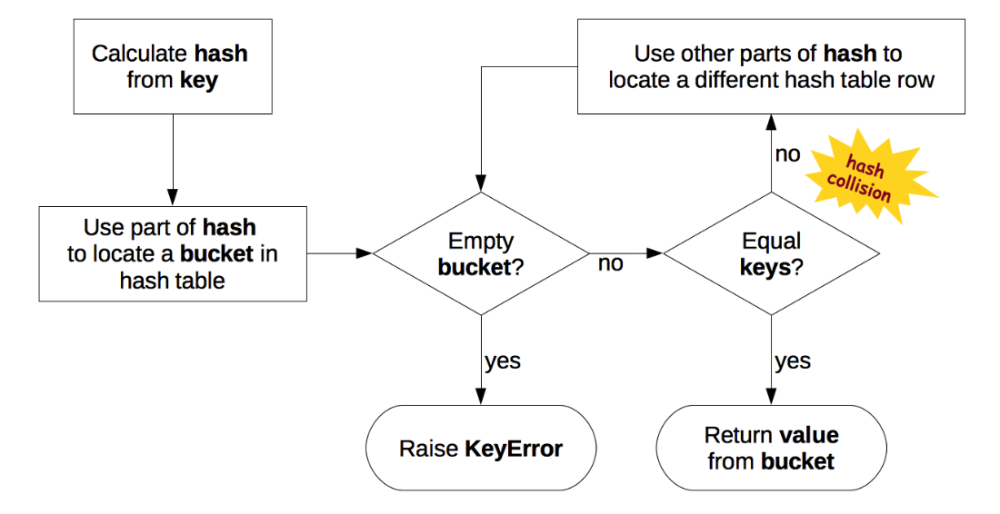
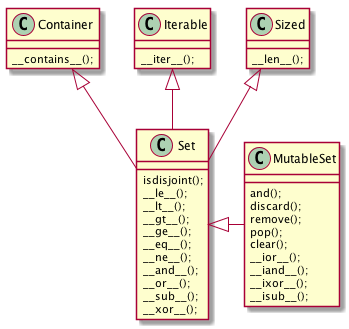
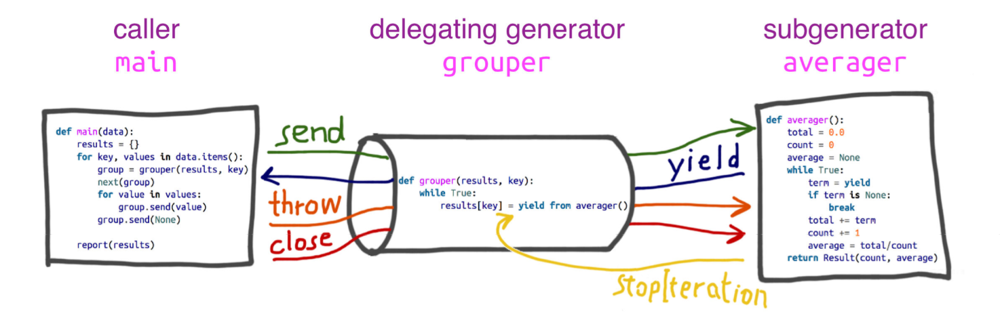

Python3
Table of Contents
- 1. 数据结构
- 2. 函数
- 3. 面向对象编程
- 4. 流程控制
- 5. 并发编程
- 6. 元编程
- 7. 代码仓库
- 7.1. 数据结构
- 7.1.1. 序列操作
- 7.1.2. 字典操作
- 7.1.3. 文本操作
- 7.1.4. 字节操作
- 7.1.5. 时间操作
- 7.1.6. 数字操作
- 7.2. 函数
- 7.3. IO 编程
- 7.4. 面向对象编程
- 7.5. 流程控制
- 7.5.1. 归约函数
- 7.5.2. 标准库中的生成器函数
- 7.5.2.1. 用于过滤的生成器函数
- 7.5.2.1.1. itertools.compress(it, selector_it)
- 7.5.2.1.2. itertools.dropwhile(predicate, it)
- 7.5.2.1.3. builtin.filter(predicate, it)
- 7.5.2.1.4. itertools.filterfalse(predicate, it)
- 7.5.2.1.5. itertools.islice(it, [start], stop, step=1)
- 7.5.2.1.6. itertools.takewhile(predicate, it)
- 7.5.2.1.7. builtin.iter(callable, sentinel)
- 7.5.2.2. 用于映射的生成器函数
- 7.5.2.3. 用于合并可迭代对象的生成器函数
- 7.5.2.4. 用于扩展输出元素的生成器函数
- 7.5.2.5. 用于重新排列元素的生成器函数
- 7.5.2.1. 用于过滤的生成器函数
- 7.5.3. 上下文管理
- 7.6. 并发编程
- 7.7. 元编程
- 7.8. 网络编程
- 7.1. 数据结构
- 8. 参考文档
1 数据结构
1.1 序列类型
Python 标准库使用 C 实现了丰富的序列类型，如：
容器序列 (存放不同类型的数据 引用)
list, tuple, collections.deque
扁平序列 (存放一种类型的数据 值)
str, bytes, bytearray, memoryview, array.array

Figure 1: 可变序列 MutableSequence 和不可变序列 Sequence 的差异：（两个都是 collection.abc 中的类）
1.1.1 元组
元组通常被用作 不可变的列表 。 但元组的意义是 对数据的记录 ：元组中的每个元素都存放了记录中一个字段的数据，外加这个字段的位置。 正是这个位置信息给数据赋予了意义。
1.1.2 具名元组
from collections import namedtuple City = namedtuple('City', 'name country population coordinates') tokyo = City('Tokyo', 'JP', 36.933, (35.689722, 139.691667)) log("tokyo", tokyo) log("tokyo.population", tokyo.population) log("tokyo.coordinates", tokyo.coordinates) log("tokyo[1]", tokyo[1])
=========== tokyo ============ City(name='Tokyo', country='JP', population=36.933, coordinates=(35.689722, 139.691667)) ====== tokyo.population ====== 36.933 ===== tokyo.coordinates ====== (35.689722, 139.691667) ========== tokyo[1] ========== JP
除了从普通元组继承来的属性之外，具名元祖还有一些自己专用的属性：
log("City._fields", City._fields) LatLong = namedtuple('LatLong', 'lat long') delhi_data = ('Delhi NCR', 'IN', 21.935, LatLong(28.613889, 77.208889)) delhi = City._make(delhi_data) log("delhi._asdict()", delhi._asdict()) print() for key, value in delhi._asdict().items(): print(key + ':', value)
======== City._fields ========
('name', 'country', 'population', 'coordinates')
====== delhi._asdict() =======
OrderedDict([('name', 'Delhi NCR'), ('country', 'IN'), ('population', 21.935), ('coordinates', LatLong(lat=28.613889, long=77.208889))])
name: Delhi NCR
country: IN
population: 21.935
coordinates: LatLong(lat=28.613889, long=77.208889)
1.1.3 列表
切片操作里不包含区间范围的最后一个元素是 Python 的风格，这个习惯带来的好处如下：
- 当只有最后一个位置信息时，可以快速看出有几个元素：
range(3)和my_list[:3]都返回 3 个元素 - 当起止位置信息都可见时，可以快速计算出区间长度，即
stop - start - 可以利用任意一个下标把序列分割成不重叠的两部分，只需写成：
my_list[:3]和my_list[3:]
1.1.4 数组
如果需要一个只包含数字的列表，使用 array.array 比 list 更高效。
创建数组需要一个类型码，用来表示底层的 C 语言应存放怎样的数据类型。
from array import array from random import random floats = array('d', (random() for i in range(1000))) # 'd' 表示双精度浮点 log("floats[-1]", floats[-1])
========= floats[-1] ========= 0.970088201571867
1.1.5 内存视图
memoryview 是一个内置类，能让用户在 不复制内容的情况下 ，在数据结构之间 共享内存 。
# 通过改变数组中的一个字节来更新数组里某个元素的值 import array numbers = array.array('h', [-2, -1, 0, 1, 2]) # 'h' 表示 16 位二进制整数 memv = memoryview(numbers) # memoryview.cast 会把同一块内存里的内容打包成一个全新的 memoryview memv_oct = memv.cast('B') # 'B' 表示无符号字符 memv_oct[5] = 4 log("numbers", numbers)
========== numbers ===========
array('h', [-2, -1, 1024, 1, 2])
1.1.6 双向队列
collection.deque 是一个 线程安全 ，可以快速从两端添加或删除元素的数据类型。
如果想要一种数据结构来存放 最近用到的几个元素 ，deque 是一个很好的选择。
from collections import deque dq = deque(range(10), maxlen=10) log("dq", dq) dq.rotate(3) log("dq.rotate(3)", dq) dq.rotate(-4) log("dq.rotate(-4)", dq) dq.appendleft(-1) log("dq.appendleft(-1)", dq) dq.extend([11, 22, 33]) log("dq.extend([11, 22, 33])", dq)
============= dq ============= deque([0, 1, 2, 3, 4, 5, 6, 7, 8, 9], maxlen=10) ======== dq.rotate(3) ======== deque([7, 8, 9, 0, 1, 2, 3, 4, 5, 6], maxlen=10) ======= dq.rotate(-4) ======== deque([1, 2, 3, 4, 5, 6, 7, 8, 9, 0], maxlen=10) ===== dq.appendleft(-1) ====== deque([-1, 1, 2, 3, 4, 5, 6, 7, 8, 9], maxlen=10) == dq.extend([11, 22, 33]) === deque([3, 4, 5, 6, 7, 8, 9, 11, 22, 33], maxlen=10)
1.2 字典

Figure 2: collections.abc 中的 MutableMapping 和它的超类
非抽象映射类型一般不会直接继承 collections.abc 中的抽象基类， 而是直接对 dict 或是 collections.UserDict 进行扩展。 这些抽象基类的主要作用是 形式化文档 ，可以和 isinstance 一起被用来判定某个数据是不是 广义上的映射类型 ：
from collections import abc d = {} print(isinstance(d, abc.Mapping))
True
1.2.1 __missing__方法
映射类型在处理找不到的键的时候，都会涉及__missing__方法。 虽然基类 dict 没有定义这个方法，但是如果一个类继承了 dict ，然后提供了__missing__方法， 那么当__getitem__遇到找不到键的时候，Python 会自动调用它，而不是抛出 KeyError 异常。
__missing__ 方法只会被__getitem__调用（即使用表达式 d[k] ）
1.2.2 散列表
散列表是一个 稀疏数组 (总是有空白元素的数组称为稀疏数组)。散列表中的单元叫做 bucket 。 每个 bucket 分为两部分，一个是键的引用，一个是值的引用。
Python 会设法保证大概还有三分之一的 bucket 是空的，所以在快要到达这个阈值的时候， 原有的散列表会被复制到一个更大的空间里面 。
1.2.2.1 加盐
str, bytes 和 datetime 对象的散列值计算过程中多了 随机加盐 这一步。
所加盐值是进程中一个常量，每次启动解释器都会生成一个不同的盐值。 随机盐值的加入是为了防止 DOS 攻击而采取的一种安全措施。
1.2.2.2 散列表算法

1.2.2.3 可散列对象必须满足的条件
- 支持
hash()函数，并且通过__hash__方法所得到的散列值是不变的 - 支持通过__eq__方法来检测相等性
- 若
a==b为真，则hash(a)==hash(b)也为真
如果一个含有自定义__eq__方法的类处于可变的状态，就不要在这个类中实现__hash__方法， 因为它的实例是不可散列的。
1.3 集合

Figure 4: collections.abc 中的 MutableSet 和它的超类
1.3.1 合集，交集，差集
- 合集：
a | b - 交集：
a & b - 差集：
a - b
1.4 Unicode
1.4.1 字符编码的工作方式
在计算机内存中，统一使用 Unicode 编码，当需要保存到硬盘或者需要传输的时候，就转换为 UTF-8 编码。
Python 的字符串在内存中以 Unicode 表示 ，一个字符对应若干个字节。 如果要在网络上传输，或者保存到磁盘上， 就需要把字符串变为以字节为单位的 bytes 。

2 函数
2.1 函数参数
函数参数定义的顺序必须是：必选参数、默认参数、可变参数、仅限关键字参数和关键字参数。
2.1.1 仅限关键字参数
仅限关键字参数可以用于限制关键字参数的名字。调用时必须传入参数名，否则将报错。
定义函数时若想指定 仅限关键字参数 ，要把它们放到前面有 * 的参数后面。
如果不想支持数量不定的定位参数，但是想支持仅限关键字参数，在函数签名中放一个 * 即可：
def f(a, *, b): return a, b print(f(1, b=3))
(1, 3)
如果函数定义中已经有了一个可变参数，后面跟着的仅限关键字参数就不再需要分隔符 * ：
def f(a, *b, c): return (a, b, c) print(f(1, 2, 3, c=4))
(1, (2, 3), 4)
2.1.2 默认参数的陷阱
定义默认参数时，默认参数必须指向不可变对象。
def add_end(L=[]): L.append('END') return L print(add_end()) print(add_end()) print(add_end())
['END'] ['END', 'END'] ['END', 'END', 'END']
出现这种现象的原因在于， 函数在定义的时候，默认参数 L 的值就被计算出来了，即 [] ，且该 引用 保存在函数属性__defaults__中。 每次调用该函数，如果改变了 L 的内容，__defaults__中的内容 也将随之改变 。
可以用 None 这个不可变对象来避免这种陷阱：
def add_end(L=None): if L is None: L = [] L.append('END') return L
2.2 函数属性
class C: pass obj = C() def func(): pass log("函数有而常规对象没有的属性", set(dir(func)) - set(dir(obj)))
================================ 函数有而常规对象没有的属性 =================================
{'__call__', '__code__', '__get__', '__name__', '__qualname__', '__defaults__', '__annotations__', '__kwdefaults__', '__globals__', '__closure__'}
| 名称 | 类型 | 说明 |
|---|---|---|
| __annotations__ | dict | 参数和返回值注解 |
| __call__ | method-wrapper | 可调用对象协议 |
| __closure__ | tuple | 闭包，即自由变量的绑定 |
| __code__ | code | 编译成字节码的函数元数据和定义体 |
| __defaults__ | tuple | 参数默认值 |
| __get__ | method-wrapper | 只读描述符协议 |
| __globals__ | dict | 函数所在模块中的全局变量 |
| __kwdefaults__ | dict | 仅限关键字形式参数默认值 |
| __name__ | str | 函数名 |
| __qualname__ | str | 函数限定名 |
2.3 局部变量作用域规则
b = 6 def f(a): print(a) print(b) b = 9 try: f(3) except Exception as e: print("Exception:", e)
3 Exception: local variable 'b' referenced before assignment
编译函数定义体时，由于在函数中对 b 进行了赋值，因此 Python 判定 b 为局部变量。 当函数被调用时，Python 尝试获取局部变量 b 时，发现 b 没有绑定值，于是报错。
这是 Python 的 设计选择 ：不要求声明变量，但是假定 在函数定义体中赋值的变量是局部变量 。
2.4 闭包
闭包指的是延伸了作用域的 函数 ，其中包含函数定义体中引用了， 但是不在定义体中定义的 非全局变量 （自由变量）。
def make_averager(): series = [] def averager(new_value): series.append(new_value) total = sum(series) return total/len(series) return averager avg = make_averager() print(avg(10)) print(avg(11)) print(avg(12))
10.0 10.5 11.0
2.4.1 自由变量定义
自由变量指的是未在 local 作用域中绑定的变量。

2.4.2 闭包元信息（__code__, __closure__）
局部变量和自由变量的名称保存在__code__属性中：
log("avg.__code__.co_varnames", avg.__code__.co_varnames) log("avg.__code__.co_freevars", avg.__code__.co_freevars)
=========================== avg.__code__.co_varnames ===========================
('new_value', 'total')
=========================== avg.__code__.co_freevars ===========================
('series',)
自由变量的绑定值保存在__closure__属性中：
log("avg.__closure__", avg.__closure__)
=============================== avg.__closure__ ================================ (<cell at 0x111aff978: list object at 0x111954dc8>,)
__closure__ 中的各个元素对应于 __code__.co_freevars 中的一个名称。
这些元素是 cell 对象，该对象的 cell_contents 属性保存着真正的值：
log("avg.__closure__[0].cell_contents", avg.__closure__[0].cell_contents)
======================= avg.__closure__[0].cell_contents ======================= [10, 11, 12]
2.4.3 nonlocal
def make_averager(): count = 0 total = 0 def averager(new_value): count += 1 total += new_value return total / count return averager avg = make_averager() try: print(avg(10)) except Exception as e: print(e)
local variable 'count' referenced before assignment
造成上述错误的原因在于，如果 尝试重新绑定 ，例如 count = count + 1 ，
其实会 隐式创建局部变量 count ，从而导致错误。
同时，这样一来， count 就不可能是自由变量了，不会保存在闭包中。
Python 3 引入了 nonlocal 声明，它的作用是 把变量标记为自由变量 ：
def make_averager(): count = 0 total = 0 def averager(new_value): nonlocal count, total count += 1 total += new_value return total / count return averager avg = make_averager() try: print(avg(10)) except Exception as e: print(e)
10.0
2.4.4 闭包的陷阱
闭包中不要引用任何可能会变化的变量 ：
def count(): fs = [] for i in range(1, 4): def f(): return i*i fs.append(f) return fs f1, f2, f3 = count() print(f1(), f2(), f3())
9 9 9
如果一定要引用会变化的变量，可以再创建一个函数：
def count(): def f(j): def g(): return j*j return g fs = [] for i in range(1, 4): fs.append(f(i)) return fs f1, f2, f3 = count() print(f1(), f2(), f3())
1 4 9
2.5 参数化装饰器
参数化装饰器本质上是一个 装饰器工厂函数 ：把参数化传给它，返回一个装饰器， 然后再把这个装饰器应用到要装饰的函数上：
def decorator(*args, **kwargs): def decorate(func): pass return decorate
3 面向对象编程
3.1 对象的比较(== 与 is)
== 比较两个对象的值 (对象中保存的数据)，而 is 比较对象的标识。
a==b 等同于 a.__eq__(b) 。
继承自 object 的__eq__方法比较两个对象的 ID ，结果与 is 一样。
但多数内置类型使用更有意义的方式覆盖了__eq__方法，会考虑对象属性的值。
3.2 对象的深复制与浅复制
构造方法或 [:] 做的是浅复制，即复制了 最外层 容器，
副本中的元素是源容器中元素的引用。
copy 模块提供的 deepcopy 和 copy 函数能为任意对象做深复制和浅复制：
import copy class A: def __init__(self): self.container = [] a = A() a.container.append(1) a_copy = copy.copy(a) a_deepcopy = copy.deepcopy(a) a.container.append(2) log("a_copy.container", a_copy.container) log("a_deepcopy.container", a_deepcopy.container)
=============================== a_copy.container =============================== [1, 2] ============================= a_deepcopy.container ============================= [1]
3.3 垃圾回收
如果两个对象相互引用，当它们的引用 只存在两者之间时 ，垃圾回收程序会判断它们都无法获取， 进而把它们 都销毁 。
3.3.1 监控对象回收(weakref.finalize)
import weakref s = {1, 2, 3} ender = weakref.finalize(s, lambda: print("Gone with the wind ...")) print(ender.alive) del s
True Gone with the wind ...
3.4 弱引用
弱引用经常用在缓存中，即需要引用对象，但又不让对象存在的时间超过所需时间。
3.4.1 创建弱引用
弱引用是可调用对象，如果对象存在，调用弱引用可以获取对象，否则返回 None :
import weakref a = {0, 1} wref = weakref.ref(a) print(wref())
{0, 1}
3.4.2 weakref.WeakValueDictionary
WeakValueDictionary 类实现的是一种可变映射， 里面的值是对象的弱引用 。 被引用的对象在程序中的其他地方被当作垃圾回收后，对应的键会自动从 WeakValueDictionary 中删除。 因此，WeakValueDictionary 经常用于缓存。
import weakref class Cheese: def __init__(self, kind): self.kind = kind stock = weakref.WeakValueDictionary() catalog = [Cheese('Read Leicester'), Cheese('Tilsit'), Cheese('Brie'), Cheese('Parmesan')] for cheese in catalog: stock[cheese.kind] = cheese print(sorted(stock.keys())) del catalog del cheese print(sorted(stock.keys()))
['Brie', 'Parmesan', 'Read Leicester', 'Tilsit'] []
3.4.3 weakref.WeakKeyDictionary
与 WeakValueDictionary 对应的是 WeakKeyDictionary ，后者的键是弱引用。
3.4.4 weakref.WeakSet
保存元素弱引用的集合类。元素没有强引用时，集合会把它删除。
如果 一个类需要知道所有实例 ，一种好的方案是创建一个 WeakSet 类型的类属性，用以保存实例的引用。
3.4.5 弱引用的局限
不是每个 Python 对象都可以作为弱引用的目标 (或称所指对象) 。
list 和 dict 实例不能作为所指对象， 但是它们的子类可以 。
int 和 tuple 实例不能作为弱引用的目标，甚至它们的 子类也不行 。
这些局限是内部优化导致的结果。
3.4.6 对象支持弱引用(__weakref__属性)
为了让对象支持弱引用，必须要有 __weakref__ 这个属性，用户定义的类中默认就有这个属性。
如果类中定义了 __slots__ 属性，而且想把实例作为弱引用的目标，
那么必须把 __weakref__ 添加到 __slots__ 中。
3.5 抽象类
3.5.1 内置抽象基类
大多数内置抽象基类在 collection.abc, numbers 和 io 模块中定义。
collection.abc 中的抽象基类最常用，其次是 numbers 。

Figure 6: collections.abc 模块中各个抽象基类的 UML 类图
3.5.2 自定义抽象基类
抽象基类中的抽象方法可以有实现代码。
即使实现了， 子类也必须覆盖抽象方法 ，但是在子类中可以使用 super() 函数调用抽象方法。
与其他装饰器一起使用时， @abstractmethod 应放在 最里层 ，
即 @abstractmethod 与 def 之间不能有其他装饰器。
from abc import ABC, abstractmethod class Pet(ABC): @classmethod def from_name(cls, name): for s_cls in cls.__subclasses__(): # 注意 __subclasses__ 的用法 if name == s_cls.__name__.lower(): return s_cls() @abstractmethod def hello(self): pass class Dog(Pet): def hello(self): print("WonWonWon") Pet.from_name("dog").hello()
WonWonWon
3.5.3 虚拟子类
虚拟子类的作用在于：即使不通过继承，也可以把一个类注册为抽象基类的子类。
当注册了抽象子类，必须保证所注册的类忠实地实现了抽象基类定义的接口（虽然 Python 并不在注册时做检查）， 否则在运行时可能会抛异常。
注册虚拟子类的方式是在抽象基类上调用 register 方法，
register 方法通常作为普通函数调用，也可以作为装饰器使用。
这么做之后，注册的类会变成抽象基类的虚拟子类，而且 issubclass 和 isinstance 都能识别，
但是注册的类不会从抽象基类中继承任何方法或属性 。
@Pet.register class Cat: pass class Bird(list): pass Pet.register(Bird) log("issubclass(Cat, Pet)", issubclass(Cat, Pet)) log("isinstance(Bird(), Pet)", isinstance(Bird(), Pet)) log("Bird.__mro__", Bird.__mro__)
==== issubclass(Cat, Pet) ==== True == isinstance(Bird(), Pet) === True ======== Bird.__mro__ ======== (<class '__main__.Bird'>, <class 'list'>, <class 'object'>)
虚拟子类的 __mro__ 属性中没有虚拟基类，说明了虚拟子类并没有从虚拟基类中继承任何方法。
3.5.3.1 __subclasses__
该方法返回类的直接子类列表， 不含虚拟子类 。
3.5.3.2 _abc_registry
只有抽象基类才有这个 属性 ，其值是 WeakSet 对象，即抽象基类注册的虚拟子类的弱引用。
3.6 继承
直接子类化内置类型 (如 dict, list 或 str) 容易出错，
因为内置类型的方法通常会忽略用户覆盖的方法。(例子)
不要子类化内置类型 ，用户自己定义的类应该继承 collection 模块中的类，
如 UserDict, UserList 和 UserString ，这些类 做了特殊设计 ，易于扩展。
3.7 classmethod / staticmethod 装饰器
classmethod= 最常见的用途是 定义备选构造方法 。
staticmethod 就是 普通的函数 ，只是碰巧在类的定义体中。
该装饰器 并不是很重要 ，因为可以在同一模块中该类的前后定义函数即可达到同样的效果。
3.8 __slots__属性
默认情况下，Python 在各个实例中名为 __dict__ 的字典里存储实例属性。
为了使用底层的散列表提升访问速度，字典会消耗大量内存。
如果要处理数百万个属性不多的实例，通过 __slots__ 类属性，能节省大量内存。
其本质是让解释器在元组中存储实例属性，而不是使用字典。
继承自超类的 __slots__ 属性 没有效果 ，Python 只会使用 各个类中自己定义 的 __slots__ 属性。
不要使用 __slots__ 禁止类的用户新增实例属性，使用 __slots__ 是 为了优化，不是为了约束。
3.8.1 节省的内存也可能被再次吃掉
如果把 __dict__ 这个名称添加到 __slots__ 中，
实例会在元祖中保存各个实例的属性，同时还支持动态创建属性，但这样就失去了节省内存的功效。
3.9 __getattr__方法
对于 my_obj.x 表达式，Python 会检查该实例有没有名为 x 的属性，如果没有，到类 my_obj.__class__ 中查找；
如果仍然没找到，则顺着继承树继续查找。
如果依旧找不到，则调用 my_obj 所属类中定义的 __getattr__ 方法，传入 self 和属性名称的字符串形式 'x' 。
多数时候，如果实现了 __getattr__ 方法，那么也要定义 __setattr__ 方法，以防对象的行为不一致。
4 流程控制
4.1 内置的 iter 函数
当需要迭代对象 x 时，会自动调用 iter(x) 。内置的 iter 函数有以下作用：
- 检查对象是否实现了
__iter__方法，如果实现了就调用它，获取一个迭代器。 - 如果没有实现
__iter__方法，但是实现了__getitem__方法，Python 会创建一个迭代器，尝试按顺序（从索引0开始）获取元素。 - 如果尝试失败，则抛出
TypeError异常。
4.2 生成器
生成器保存的是算法 ，每次调用 next(g) ，就计算出 g 的下一个元素的值。
直到计算到最后一个元素，没有更多的元素时，抛出 StopIteration 异常。
当 Python 函数定义体中有 yield 关键字，该函数就是生成器函数。
调用生成器函数时，会返回一个生成器对象。也就是说生成器函数是生成器工厂。
生成器表达式本质上是生成器函数的语法糖。
4.3 for/else, while/else, try/else
在所有情况下，如果因为异常或者 return，break 或 continue 语句导致控制权跳到了块之外，else 子句也会被跳过。
for/else
仅当 for 循环运行完毕时 (即 for 循环没有被 break 语句中止) 才运行 else 块。
while/else
仅当 while 循环因为条件为假值而退出时 (即 while 循环没有被 break 语句中止) 才运行 else 块。
try/else
仅当 try 块中没有异常抛出时才运行 else 块， else 子句抛出的异常不会由前面的 except 子句处理。
4.4 上下文管理协议(with)
with 语句的目的是简化 try/finally 模式 。
上下文管理器协议包含__enter__和__exit__两个方法:
- with 语句开始运行时，会在上下文管理器对象上调用__enter__方法。
- with 语句运行结束后，会在上下文管理器对象上调用__exit__方法，以此扮演 finally 子句的角色。
__exit__方法如果返回 True 之外的值 (包括 None) ，则 with 块中的任何异常都会向上冒泡。 (返回 True ，即告诉解释器，异常已经处理了)
4.5 协程
协程是指一个过程，这个过程与调用方协作，产出由调用方提供的值。
协程中的关键字 yield 可以视作控制流程的方式。
4.5.1 协程的状态
可以使用 inspect.getgeneratorstate() 获取协程四个状态中的一个：
- GEN_CREATED：等待开始执行
- GEN_RUNNING：正在执行（只有在多线程应用中才能看到这个状态）
- GEN_SUSPENDED：在 yield 表达式处暂停
- GEN_CLOSED：执行结束
4.5.2 执行过程举例

- 调用
next(my_coro2)，打印第一个消息，然后执行 yield a ，产出数字 14 - 调用
my_coro2.send(28)，把 28 赋值给 b ，打印第二个消息，然后执行yield a + b，产出 42 - 调用
my_coro2.send(99)，把 99 赋值给 c ，打印第三个消息，协程终止
注意，各个阶段都在 yield 表达式中结束，而且下一个阶段都从那一行代码开始，然后再把 yield 表达式的值赋给变量。
4.5.3 预激(prime)
如果不预激，则协程没什么用，即调用 send() 之前，一定要先调用 next() 。
使用 yield from 调用协程时，会 自动预激 。
标准库里的 asyncio.coroutine 装饰器不会预激协程，兼容 yield from 语法。
4.5.4 协程的终止和异常处理
协程中未处理的异常会向上冒泡，传给调用协程的对象，未处理的异常会导致协程终止。
4.5.4.1 generator.throw()
generator.throw(exc_type[, exc_value[, traceback]])
该方法会导致生成器在暂停的 yield 表达式处抛出指定的异常。
如果生成器内部处理了该异常，代码会向前执行到下一个 yield 表达式处， 而产出的值会成为该方法的返回值 。
如果生成器内部没有处理这个异常，异常会向上冒泡，传到调用方的上下文中。
4.5.4.2 generator.close()
该方法使得生成器在暂停的 yield 表达式处抛出 GeneratorExit 异常。
如果生成器内部没有处理这个异常，调用方不会报错。
捕获到 GeneratorExit 异常后，生成器 不能再产出值 ，否则解释器会抛出 RuntimeError 异常。
如果不管协程如何结束都需要做清理工作，需要把协程定义体中相关的代码放入 try/finally 块中。
4.5.5 yield from
yield from 主要功能是创建 双向通道 ，将内层生成器直接与外层生成器的 调用方 联系起来。
这样两者可以直接发送和产出值，还可以直接传入异常对象。
即当一个生成器函数需要产出另一个生成器生成的值，可以使用这个语法：
def chain(*iterables): for i in iterables: yield from i print(list(chain('ABC', range(3))))
['A', 'B', 'C', 0, 1, 2]
yield from 结构通常会和 asyncio 模块结合起来实现异步编程。
4.5.5.1 yield from 工作原理

委派生成器相当于 管道 ，可以把任意数量的委派生成器连接在一起，
这个管道最终要以一个只使用 yield 表达式的简单生成器结束 (也能以任何可迭代对象结束) 。
任何 yield from 链都必须 由客户驱动 ，即在最外层委派生成器上调用 next(), send() 方法。
（也可以隐式调用，如使用 for 循环）
yield from x 表达式对 x 对象所做的第一件事就是调用 iter(x) ，从中获取迭代器。
因此，只要实现了 __next__ 方法， yield from 就能处理得了。
不过，引入 yield from 结构的主要目的是为了支持实现了__next__, send, close 和 throw 方法的生成器。
4.5.5.2 yield from 对异常和终止的处理
- 传入委派生成器的异常，除了 GeneratorExit 之外都传给子生成器的
throw()方法。 如果调用throw()方法抛出 StopIteration 异常，委派生成器恢复运行。 StopIteration 之外的异常会向上冒泡，传给委派生成器。（即 委派生成器若提前结束迭代，则子生成器也会自动结束迭代 ） - 如果把 GeneratorExit 异常传入委派生成器，或者在委派生成器上调用
close()方法， 则会在子生成器上调用close()方法 (如果它有的话) 。 如果子生成器调用close()方法导致异常抛出，则异常会向上冒泡，传给委派生成器， 如果没有异常抛出，则委派生成器会抛出 GeneratorExit 异常。（即 关闭委派生成器也将自动关闭子生成器 ）
4.5.5.3 yield from 表达式的值
yield from subgen 结构会在内部自动捕获 StopIteration 异常。
subgen 通过 return 关键字返回的值会赋给 StopIteration 异常的 value 属性，该值最终成为 yield from 表达式的值。
5 并发编程
5.1 全局解释锁 (GIL)
CPython 解释器本身不是线程安全的，因此有全局解释器锁 (GIL) ， 一次只允许使用一个线程执行 Python 字节码。因此，一个 Python 进程不能同时使用多个 CPU 。
5.1.1 I/O 密集型操作
标准库中所有执行阻塞型 I/O 操作的函数，在等待操作系统返回结果时都会释放 GIL 。
这意味着在 Python 语言这个层次上可以使用多线程，I/O 密集型的程序能从中受益。
( time.sleep() 函数也会释放 GIL)
5.1.2 CPU 密集型操作
使用 ProcessPoolExecutor 类把工作分配给多个进程处理可以实现真正的并行运算。
因此，如果需要做 CPU 密集型处理，可以使用它绕开 GIL ，从而利用所有可用的 CPU 。 (多个 Python 进程有各自独立的 GIL 锁，互不影响)
5.2 基于 concurrent.futures 模块的并发编程
concurrent.futures 模块的主要特色是 ThreadPoolExecutor 和 ProcessPoolExecutor 类， 这两个类实现的接口能分别在不同的线程或进程中执行可调用的对象。
通常情况下 future 对象不应由用户创建，而是由并发框架 (concurrent.futures 或 asyncio) 来实例化。
5.2.1 Executor.map(func, *iterables, timeout=None, chunksize=1)
chunksize 只对 ProcessPoolExecutor 有用，用于切分 iterables ，提高运行效率。 因为 future 结果的返回涉及到 IPC ，如果每个进程每次消耗 iterables 中的一个数据，整个过程涉及多个 IPC ，这样效率不高； 但如果对 iterables 进行切分，N 个 数据同时交给一个进程进行处理，运算结果通过一个 IPC 一并返回，这样就可以提升效率。
返回值是一个迭代器，迭代器的__next__方法调用各个 future 对象的 result 方法，得到各个 future 的结果。
from concurrent.futures import ThreadPoolExecutor import time def sleep_and_double(value): time.sleep(value) return value * 2 with ThreadPoolExecutor(max_workers=4) as executor: time0 =time.time() values = executor.map(sleep_and_double, [3, 2, 1]) time_delta = time.time() - time0 print("time consumed0: ", time_delta) print(values) time0 =time.time() print([v for v in values]) time_delta = time.time() - time0 print("time consumed1: ", time_delta)
time consumed0: 0.009264230728149414 <generator object Executor.map.<locals>.result_iterator at 0x110912e60> [6, 4, 2] time consumed1: 2.9983181953430176
5.2.2 Executor.sumit(fn, *args, **kwargs)
with ThreadPoolExecutor(max_workers=1) as executor: time0 = time.time() future = executor.submit(sleep_and_double, 3) time_delta = time.time() - time0 print("time consumed0: ", time_delta) time0 = time.time() print(future.result()) time_delta = time.time() - time0 print("time consumed1: ", time_delta)
time consumed0: 0.00031113624572753906 6 time consumed1: 3.004795789718628
5.2.3 concurrent.futures.as_completed(fs, timeout=None)
如果调用 finished = as_completed(fs, timeout) 后，经过 timeout 时间后仍然无法获取 next(finishes).result() 的值，
则抛出 concurrent.futures.TimeoutError 异常。
from concurrent import futures fs = [] with ThreadPoolExecutor(max_workers=5) as executor: for i in [5, 4, 3, 2, 1]: f = executor.submit(sleep_and_double, i) fs.append(f) time0 = time.time() finishes = futures.as_completed(fs) time_delta = time.time() - time0 print("time consumed0: ", time_delta) time0 = time.time() print([f.result() for f in finishes]) time_delta = time.time() - time0 print("time consumed1: ", time_delta)
time consumed0: 2.86102294921875e-06 [2, 4, 6, 8, 10] time consumed1: 4.999896287918091
fs 可以是一个字典，把各个 future 对象映射到其他有用的数据上， 这样尽管 future 生成的结果顺序可能乱了，依然便于使用结果做后续的处理：
from concurrent import futures from concurrent.futures import ThreadPoolExecutor import time fs = {} def sleep_and_double(value): time.sleep(value) return value * 2 with ThreadPoolExecutor(max_workers=5) as executor: for i in [5, 4, 3, 2, 1]: f = executor.submit(sleep_and_double, i) fs[f] = i time0 = time.time() finishes = futures.as_completed(fs) time_delta = time.time() - time0 print("time consumed0: ", time_delta) time0 = time.time() for f in finishes: print("#{} => {}".format(fs[f], f.result())) time_delta = time.time() - time0 print("time consumed1: ", time_delta)
time consumed0: 7.867813110351562e-06 #1 => 2 #2 => 4 #3 => 6 #4 => 8 #5 => 10 time consumed1: 5.001190900802612
5.3 基于 asyncio 包的并发编程
- asyncio 包使用的协程是有严格定义的，因此 适合 asyncio API 的协程在定义体中必须使用 yield from ，而不能用 yield 。
- 适合 asyncio 的协程必须由调用方驱动，由调用方通过
yield from coro_or_future驱动；或者把协程传给 asyncio 包中的某个函数（如asyncio.async()），从而 驱动协程 。 - @asyncio.coroutine 装饰器应该始终应用在协程上。
5.3.1 基本思想 (面向事件编程)
- 在一个单线程中使用主循环依次激活队列里的协程
- 各个协程向前执行几步，然后把控制权让给主循环
- 主循环再激活队列里的下一个协程
编写基于 asyncio 的程序需注意下述细节：
- 编写的协程链始终通过把最外层委派生成器传给 asyncio 包中的某个函数驱动，例如
loop.run_until_complete()。即我们的代码不通过调用next()函数或send()方法驱动协程。驱动由 asyncio 包实现的事件循环去做。 - 编写的协程链最终通过
yield from把职责委托给 asyncio 包中的某个协程函数，如yeild from asyncio.sleep()，或者其他库中实现高层协议的协程，如response = yield from aiohttp.request('GET', url)。也就是说， 最内层的子生成器是库中真正执行 I/O 操作的函数，而不是我们自己编写的函数。
概括起来就是：使用 asyncio 包时，我们编写的代码中包含委派生成器， 而生成器最终把职责 委托 给 asyncio 包或第三方库中的协程。 这种处理方式相当于 架起了管道 ，让 asyncio 事件循环驱动执行低层异步 I/O 操作的库函数。
5.3.2 @asyncio.coroutine 装饰器（或 async 关键字）
交给 asyncio 处理的协程要使用 @asyncio.coroutine 装饰，这虽不是强制要求，但是建议这么做。
因为这样能在一众普通函数中把协程凸显出来，也有助于调试： 如果还没从协程中产出值，协程就被垃圾回收了，可以发出警告。
也可以使用 async 关键字。
5.3.3 asyncio.Future
asyncio.Future 类的目的是与 yield from 一起使用，通常 不需要 使用以下方法：
asyncio.Future.add_done_callback()
因为可以直接把在 Future 运行结束后执行的操作放在 yield from 表达式后面。
asyncio.Future.result()
因为 yield from 从 Future 对象中产出的值就是结果。
5.3.4 asyncio.Task
asyncio.Task 是 asyncio.Future 的子类，与 threading.Thread 地位对等，可以理解为协程中的可调度单元。
5.3.4.1 创建 Task 对象
asyncio.async(coro_or_future, *, loop=None)
如果第一个参数是 Future 或 Task 对象，则原封不动地返回； 如果是协程，则会调用
loop.create_task()方法创建 Task 对象。loop 关键词参数是可选的，用于传入事件循环，如果没有传入，则将调用
asyncio.get_event_loop()获取。BaseEventLoop.create_task(coro)
5.3.5 APIs
5.3.5.1 BaseEventLoop.run_in_executor(executor, func, *args)
asyncio 的事件循环在背后维护着一个 ThreadPoolExecutor 对象， 可以调用 run_in_executor 方法，把可调用对象发给它执行。
第一个参数是 Executor 实例，如果为 None ，则使用默认的 ThreadPoolExecutor 实例。
5.3.5.2 asyncio.as_complete(fs, *, loop=None, timeout=None)
import asyncio import time async def foo(seconds): await asyncio.sleep(seconds) return seconds async def coro(): fs = [foo(10), foo(5), foo(1)] for f in asyncio.as_completed(fs): time0 = time.time() result = await f print(result, "delta", time.time() - time0) asyncio.get_event_loop().run_until_complete(coro())
5.3.5.3 asyncio.Semaphore(value=1, *, loop=None)
Semaphore 类用于限制并发请求数量。
Semaphore 对象维护一个内部计数器:
- 如果在对象上调用
acquire()方法，计数器递减； - 如果调用
release()方法，计数器递增。
可以把 Semaphore 对象 当作上下文管理器使用 。
time0 = time.time() async def foo(semaphore): with (await semaphore): await asyncio.sleep(2) print("time delta:", time.time() - time0) async def coro(): semaphore = asyncio.Semaphore(3) fs = [foo(semaphore) for _ in range(5)] for f in asyncio.as_completed(fs): await f asyncio.get_event_loop().run_until_complete(coro())
5.3.5.4 asyncio.wait(futures, *, loop=None, timeout=None, return_when=ALL_COMPLETED)
参数是一个由 Future 或协程构成的可迭代对象，wait 会分别把各个协程包装进一个 Task 对象。 wait 是协程函数，因此它 不会阻塞 ，默认行为是等传给它的所有协程运行完毕后结束。
import random async def foo(): sec = random.randint(1, 3) await asyncio.sleep(sec) return sec to_do = [foo() for _ in range(10)] wait_coro = asyncio.wait(to_do) result = asyncio.get_event_loop().run_until_complete(wait_coro) log("result", result)
6 元编程
6.1 属性查找顺序
6.1.1 从类中查找属性
使用 C.name 引用类对象 C 的一个属性时，查询操作如下：
- 当 name 是
C.__dict__中的一个键时， C.name 将从C.__dict__['name']中提取值 v。如果 v 是一个描述器，则 C.name 的值就是type(v).__get__(v, None, C)，否则，C.name 的值为 v - 否则，C.name 将委托查找 C 的基类
- 否则引发 AttributeError
6.1.2 从实例中查找属性
obj.attr 这样的表达式 不会从 obj 开始寻找 attr ，而是从 obj.__class__ 开始，
仅当类中没有名为 attr 的描述符时，才会在 obj 实例中寻找。
使用 x.name 引用类 C 的实例 x 的一个属性时，查询操作如下：
- 当 name 作为一个覆盖描述器 v 的名称在类 C （或 C 的某个祖先类）中被找到，x.name 的值就是
type(v).__get__(v, x, C) - 否则，当 name 是
x.__dict__中的一个键时，返回x.__dict__['name'] - 否则，x.name 将委托查找 x 的类，即查找 C.name
- 如果 C 定义或继承了特殊方法
__getattr__，则调用C.__getattr__(x, 'name')，而不是引发 AttributeError，然后根据__getattr__返回一个合适的值或者引发 AttributeError
6.2 特殊方法__new__
- 通常把__init__方法称为构造方法，其实，用于构建实例的是特殊方法__new__
- __new__是类方法，由于 使用了特殊方式处理 ，因此不必使用 @classmethod 装饰器
- 该方法必须返回一个实例，返回的实例会作为 第一个参数 (self) 传给__init__方法
- __init__方法其实称为初始化方法更为合适（真正的构造方法是__new__）
- 几乎不需要自定义__new__方法，从 object 类继承的实现已经足够了
__new__方法也可以返回其他类的实例，此时，解释器不会调用__init__方法
Python 构建对象的过程可以用下述伪代码概括：
def object_maker(the_class, some_arg): new_object = the_class.__new__(some_arg) if isinstance(new_object, the_class): the_class.__init__(new_object, some_arg) return new_object # 下述两个语句作用等效 # x = Foo('bar') # x = object_maker(Foo, 'bar')
6.3 property(fget=None, fset=None, fdel=None, doc=None)
- property 经常用作装饰器，但它其实是一个类
- 如果没有把函数传给某个可选参数，返回的 property 对象就不允许执行相应的操作
- property 对象都是类属性，但是管理的其实是实例属性的存取
6.4 动态属性编程 API
6.4.1 特殊属性
6.4.1.1 __class__属性
6.4.1.2 __dict__属性
6.4.1.3 __slots__属性
处理完类的定义体后再修改__slots__没有任何作用。
6.4.2 内置函数
6.4.2.1 dir([obj])
- 不会列出__dict__属性本身，但会列出其中的键
- 不会列出类的几个特殊属性（如__mro__, __bases__和__name__）
- 如果没有可选参数，则列出当前作用域中的名称
6.4.2.2 getattr(obj, name[, default])
6.4.2.3 hasattr(obj, name)
该函数的实现方法其实是调用 getattr(obj, name) ，并检查是否抛出 AttributeError 异常。
6.4.2.4 setattr(obj, name, value)
6.4.2.5 vars([obj])
- 返回对象的__dict__属性
- 如果实例所属的类定义了__slots__属性，则 vars 函数不能处理这个实例（ dir 函数能处理）
- 如果没有参数，vars 函数的作用和 locals 函数一样，返回本地作用域的字典
6.4.3 特殊方法
- 使用点号或内置的 getattr, hasattr 和 setattr 函数存取对象属性会触发下述列表中对应的特殊方法
- 直接通过实例的__dict__读写属性不会触发这些特殊方法，通常 使用这种方式跳过特殊方法
- 相比定义这些特殊方法，使用 property 或 descriptor 相对不容易出错
为确保调用特殊方法成功，特殊方法必须定义在类体上，而不能在对象的实例字典中定义。 此外，特殊方法不会被同名实例属性遮盖。
6.4.3.1 __delattr__(self, name)
6.4.3.2 __dir__(self)
把对象传给 dir 函数时被调用，列出属性。
6.4.3.3 __getattr__(self, name)
获取指定属性失败（搜索过实例，实例类和超类之后）之后被调用。
6.4.3.4 __getattribute__(self, name)
- 尝试获取属性时总会调用这个方法。（_寻找的属性是特殊属性或特殊方法除外_）
- 点号与 getattr 和 hasattr 内置函数会触发这个方法
- 调用__getattribute__方法且抛出 AttributeError 异常时，才会调用__getattr__方法
- __getattribute__方法的实现要使用
super().__getattribute__(obj, name)以 避免无限递归
6.4.3.5 __setattr__(self, name, value)
6.5 描述符(Descriptor)
- 描述符是实现了特定协议的类，协议包括__get__, __set__和__delete__方法
- 描述符的用法是：创建一个实例，作为另一个类的 类属性
- 通过类读取描述符实例（作为类属性），返回描述符实例本身（__get__方法返回描述符实例本身）
- 通过类修改描述符实例（作为类属性），直接修改类属性（__set方法 不会被调用 ）
6.5.1 只实现__get__的描述符
- 若对象__dict__中无同名属性，通过对象实例读取同名描述符实例，返回描述符实例本身
- 若对象__dict__中存在同名属性，通过对象实例读取同名描述符实例，返回对象同名属性 （但特殊方法是特例，解释器 只在实例的类对象中 ，而不是实例对象的__dict__中查找特殊方法）
- 方法就是以这种类型的描述符实现的
6.5.2 只实现__set__的描述符
- 设置对象同名实例属性时，__set__方法插手接管
- 若对象__dict__中无同名属性，通过对象实例读取同名描述符实例，返回描述符实例本身
- 若对象__dict__中存在同名属性，通过对象实例读取同名描述符实例，返回对象同名属性
6.5.2.1 实现__get__和__set__的描述符
- 内置的 property 类就是这种类型 ，其__set__方法默认抛出 AttributeError 异常
6.6 元类
- 所有类都是 type 的实例，元类是 type 的子类，可以作为制造类的工厂
- 元类可以通过实现__init__方法定制实例
- 元类的__init__方法可以做到类装饰器能做的任何事情
- 如果想进一步定制类，可以在元类中实现__new__方法。通常情况下实现__init__方法就够了
6.6.1 使用 type 动态创建类
def fn(self, name='world'): print('Hello, %s.' % name) Hello = type('Hello', (object,), dict(hello=fn)) h = Hello() print((type(Hello), type(h)))
(<class 'type'>, <class '__main__.Hello'>)
6.6.2 使用 metaclass 指定元类
类的默认元类是父类的元类 ，可以通过关键字 metaclass 指定元类：
class MetaFoo(type): def __new__(metacls, name, bases, attrs): print("metacls: {}, name: {}, bases: {}, attrs: {}".format(metacls, name, bases, attrs)) return type.__new__(metacls, name, bases, attrs) def __init__(cls, name, bases, attrs): # name, bases, attrs: 与构建类时传给 type 的参数一样 print("cls: {}, name: {}, bases: {}, attrs: {}".format(cls, name, bases, attrs)) class Foo(str, metaclass=MetaFoo): pass print(dir(Foo))
metacls: <class '__main__.MetaFoo'>, name: Foo, bases: (<class 'str'>,), attrs: {'__module__': '__main__', '__qualname__': 'Foo'}
cls: <class '__main__.Foo'>, name: Foo, bases: (<class 'str'>,), attrs: {'__module__': '__main__', '__qualname__': 'Foo'}
['__add__', '__class__', '__contains__', '__delattr__', '__dict__', '__dir__', '__doc__', '__eq__', '__format__', '__ge__', '__getattribute__', '__getitem__', '__getnewargs__', '__gt__', '__hash__', '__init__', '__init_subclass__', '__iter__', '__le__', '__len__', '__lt__', '__mod__', '__module__', '__mul__', '__ne__', '__new__', '__reduce__', '__reduce_ex__', '__repr__', '__rmod__', '__rmul__', '__setattr__', '__sizeof__', '__str__', '__subclasshook__', '__weakref__', 'capitalize', 'casefold', 'center', 'count', 'encode', 'endswith', 'expandtabs', 'find', 'format', 'format_map', 'index', 'isalnum', 'isalpha', 'isdecimal', 'isdigit', 'isidentifier', 'islower', 'isnumeric', 'isprintable', 'isspace', 'istitle', 'isupper', 'join', 'ljust', 'lower', 'lstrip', 'maketrans', 'partition', 'replace', 'rfind', 'rindex', 'rjust', 'rpartition', 'rsplit', 'rstrip', 'split', 'splitlines', 'startswith', 'strip', 'swapcase', 'title', 'translate', 'upper', 'zfill']
6.6.3 __prepare__方法
- type 构造方法及元类的__new__和__init__方法都会收到要计算的类的定义体，形式是名称到属性的映射，默认情况下，那个映射所使用的数据结构是字典
- Python3 引入了特殊方法__prepare__，这个特殊方法只在元类中有用，且必须声明为类方法，解释器调用元类的__new__方法前会先调用该方法
- __prepare__方法的第一个参数是元类，随后两个参数分别是要构建的类的名称和基类组成的元组，返回值必须是映射类型
- __prepare__返回的映射对象会传给__new__方法的最后一个参数，然后再传给__init__方法
6.6.4 与元编程相关的类属性/方法
6.6.4.1 cls.__bases__
类的基类元组。
6.6.4.2 cls.__qualname__
6.6.4.3 cls.__subclass__()
返回内存里现存的直接子类列表。
6.6.4.4 cls.mro()
解释器会调用这个方法获取超类元组。 元类可以覆盖这个方法以 定制要构建的类解析方法的顺序 。
7 代码仓库
7.1 数据结构
7.1.1 序列操作
7.1.1.1 使用 * 处理元组拆包
* 前缀只能用在 一个 变量名前面，但是这个变量可以出现在赋值表达式的任意位置。
a, b, *rest1 = range(5) log("rest1", rest1) a, b, *rest2 = range(3) log("rest2", rest2) a, b, *rest3 = range(2) log("rest3", rest3) a, *body, c, d = range(5) log("body", body) *head, b, c, d = range(5) log("head", head)
=========== rest1 ============ [2, 3, 4] =========== rest2 ============ [2] =========== rest3 ============ [] ============ body ============ [1, 2] ============ head ============ [0, 1]
7.1.1.2 对序列重排位(itemgetter)
from operator import itemgetter data = [ ('c', 2), ('b', 3), ['a', 1] ] log("[itemgetter(1, 0)(t) for t in data]", [itemgetter(1, 0)(t) for t in data])
===================== [itemgetter(1, 0)(t) for t in data] ====================== [(2, 'c'), (3, 'b'), (1, 'a')]
7.1.1.3 给切片赋值
如果赋值的对象是一个切片， 赋值语句的右侧必须是个可迭代对象 。
l = list(range(10)) log("l", l) l[2:5] = [20, 30] log("after l[2:5] = [20, 30]", l) del l[5:7] log("after del l[5:7]", l) l[3::2] = [11, 22] log("after l[3::2] = [11, 22]", l) try: l[2:5] = 100 except Exception as e: log("e", e) l[2:5] = [100] log("after l[2:5] = [100]", l)
============= l ============== [0, 1, 2, 3, 4, 5, 6, 7, 8, 9] == after l[2:5] = [20, 30] === [0, 1, 20, 30, 5, 6, 7, 8, 9] ====== after del l[5:7] ====== [0, 1, 20, 30, 5, 8, 9] == after l[3::2] = [11, 22] == [0, 1, 20, 11, 5, 22, 9] ============= e ============== can only assign an iterable ==== after l[2:5] = [100] ==== [0, 1, 100, 22, 9]
7.1.1.4 使用 bisect 管理已排序序列
7.1.1.4.1 使用 bisect 搜索
import bisect import sys HAYSTACK = [1, 4, 5, 6, 8, 12, 15, 20, 21, 23, 23, 26, 29, 30] NEEDLES = [0, 1, 2, 5, 8, 10, 22, 23, 29, 30, 31] ROW_FMT = '{0:2d} @ {1:2d} {2}{0:<2d}' def demo(bisect_fn): print('DEMO:', bisect_fn.__name__) print('haystack ->', ' '.join('%2d' % n for n in HAYSTACK)) for needle in reversed(NEEDLES): position = bisect_fn(HAYSTACK, needle) offset = position * ' |' print(ROW_FMT.format(needle, position, offset)) demo(bisect.bisect_left) print('=' * 60) demo(bisect.bisect)
DEMO: bisect_left haystack -> 1 4 5 6 8 12 15 20 21 23 23 26 29 30 31 @ 14 | | | | | | | | | | | | | |31 30 @ 13 | | | | | | | | | | | | |30 29 @ 12 | | | | | | | | | | | |29 23 @ 9 | | | | | | | | |23 22 @ 9 | | | | | | | | |22 10 @ 5 | | | | |10 8 @ 4 | | | |8 5 @ 2 | |5 2 @ 1 |2 1 @ 0 1 0 @ 0 0 ============================================================ DEMO: bisect_right haystack -> 1 4 5 6 8 12 15 20 21 23 23 26 29 30 31 @ 14 | | | | | | | | | | | | | |31 30 @ 14 | | | | | | | | | | | | | |30 29 @ 13 | | | | | | | | | | | | |29 23 @ 11 | | | | | | | | | | |23 22 @ 9 | | | | | | | | |22 10 @ 5 | | | | |10 8 @ 5 | | | | |8 5 @ 3 | | |5 2 @ 1 |2 1 @ 1 |1 0 @ 0 0
7.1.1.4.2 使用 bisect 建立查询表格
def grade(score, breakpoints=[60, 70, 80, 90], grades='FDCBA'): i = bisect.bisect(breakpoints, score) return grades[i] log("[grade(score) for score in [33, 99, 77, 70, 89, 90, 100]]", [grade(score) for score in [33, 99, 77, 70, 89, 90, 100]])
========== [grade(score) for score in [33, 99, 77, 70, 89, 90, 100]] =========== ['F', 'A', 'C', 'C', 'B', 'A', 'A']
7.1.1.4.3 使用 bisect.insort 插入新元素
import bisect import random SIZE=7 random.seed(1729) my_list = [] for i in range(SIZE): new_item = random.randrange(SIZE*2) bisect.insort(my_list, new_item) print('%2d ->' % new_item, my_list)
10 -> [10] 0 -> [0, 10] 6 -> [0, 6, 10] 8 -> [0, 6, 8, 10] 7 -> [0, 6, 7, 8, 10] 2 -> [0, 2, 6, 7, 8, 10] 10 -> [0, 2, 6, 7, 8, 10, 10]
7.1.1.5 列表中删除数据的陷阱
lst = ['a', 'b', 'c', '', ''] for i in lst: if i is '': lst.remove(i) print(lst)
['a', 'b', 'c', '']
7.1.1.5.1 原理
list 属于线性表，它的连续在于用一块连续的内存空间存储元素，在调用 remove 时，只是删除了地址内的元素。
回到问题，当删除列表中的元素时， for in 是对下标进行操作，
而 remove 是对值进行操作, 当 for 到达索引为 3 ，即第一个空字符位置时，符合条件即删除。
因为 list 是线性表，所以删除这个空字符时， 同时后面的所有元素自动移动位置 1 ，
此时的 lst 等于 ['a', 'b', 'c', ''] ，因为 for in 已经遍历到了索引 3 处，所以循环结束。
7.1.1.5.2 解决方法
lst = ['a','','b','','c','',''] # 做法一 while '' in lst: lst.remove('') print(lst) # 做法二 lst_new = [i for i in lst if i != '']
7.1.1.6 列表中出现频率最高
words = [ 'look', 'into', 'my', 'eyes', 'look', 'into', 'my', 'eyes', 'the', 'eyes', 'the', 'eyes', 'the', 'eyes', 'not', 'around', 'the', 'eyes', "don't", 'look', 'around', 'the', 'eyes', 'look', 'into', 'my', 'eyes', "you're", 'under' ] from collections import Counter word_counts = Counter(words) top_three = word_counts.most_common(3) print(top_three)
[('eyes', 8), ('the', 5), ('look', 4)]
7.1.1.7 列表中最大或最小的几项
import heapq portfolio = [ {'name': 'IBM', 'shares': 100, 'price': 91.1}, {'name': 'AAPL', 'shares': 50, 'price': 543.22}, {'name': 'FB', 'shares': 200, 'price': 21.09}, {'name': 'HPQ', 'shares': 35, 'price': 31.75}, {'name': 'YHOO', 'shares': 45, 'price': 16.35}, {'name': 'ACME', 'shares': 75, 'price': 115.65} ] cheap = heapq.nsmallest(3, portfolio, key=lambda s: s['price']) expensive = heapq.nlargest(3, portfolio, key=lambda s: s['price']) r = {'cheap': cheap, 'expensive': expensive} print(r)
7.1.1.8 对列表中的数据分组
rows = [ {'address': '5412 N CLARK', 'date': '07/01/2012'}, {'address': '5148 N CLARK', 'date': '07/04/2012'}, {'address': '5800 E 58TH', 'date': '07/02/2012'}, {'address': '2122 N CLARK', 'date': '07/03/2012'}, {'address': '5645 N RAVENSWOOD', 'date': '07/02/2012'}, {'address': '1060 W ADDISON', 'date': '07/02/2012'}, {'address': '4801 N BROADWAY', 'date': '07/01/2012'}, {'address': '1039 W GRANVILLE', 'date': '07/04/2012'}, ] from itertools import groupby rows.sort(key=lambda r: r['date']) for date, items in groupby(rows, key=lambda r: r['date']): print(date) for i in items: print(' ', i)
07/01/2012
{'address': '5412 N CLARK', 'date': '07/01/2012'}
{'address': '4801 N BROADWAY', 'date': '07/01/2012'}
07/02/2012
{'address': '5800 E 58TH', 'date': '07/02/2012'}
{'address': '5645 N RAVENSWOOD', 'date': '07/02/2012'}
{'address': '1060 W ADDISON', 'date': '07/02/2012'}
07/03/2012
{'address': '2122 N CLARK', 'date': '07/03/2012'}
07/04/2012
{'address': '5148 N CLARK', 'date': '07/04/2012'}
{'address': '1039 W GRANVILLE', 'date': '07/04/2012'}
或者使用 defaultdict 来实现：
from collections import defaultdict rows_by_date = defaultdict(list) for row in rows: rows_by_date[row['date']].append(row) print(rows_by_date)
defaultdict(<class 'list'>, {'07/01/2012': [{'address': '5412 N CLARK', 'date': '07/01/2012'}, {'address': '4801 N BROADWAY', 'date': '07/01/2012'}], '07/02/2012': [{'address': '5800 E 58TH', 'date': '07/02/2012'}, {'address': '5645 N RAVENSWOOD', 'date': '07/02/2012'}, {'address': '1060 W ADDISON', 'date': '07/02/2012'}], '07/03/2012': [{'address': '2122 N CLARK', 'date': '07/03/2012'}], '07/04/2012': [{'address': '5148 N CLARK', 'date': '07/04/2012'}, {'address': '1039 W GRANVILLE', 'date': '07/04/2012'}]})
7.1.1.9 消除序列中的重复数据，同时保持数据顺序
def dedupe(items, key=None): seen = set() for item in items: val = item if key is None else key(item) if val not in seen: yield item seen.add(val) a = [ {'x': 2, 'y': 3}, {'x': 1, 'y': 4}, {'x': 2, 'y': 3}, {'x': 2, 'y': 3}, {'x': 10, 'y': 15} ] print(list(dedupe(a, key=lambda a: (a['x'],a['y']))))
[{'x': 2, 'y': 3}, {'x': 1, 'y': 4}, {'x': 10, 'y': 15}]
def dedupe(items): seen = set() for item in items: if item not in seen: yield item seen.add(item) a = [1, 5, 2, 1, 9, 1, 5, 10] print(list(dedupe(a)))
[1, 5, 2, 9, 10]
7.1.1.10 序列解包 (unpack)
records = [ ('foo', 1, 2), ('bar', 'hello'), ('foo', 3, 4), ] def do_foo(x,y): print('foo', x, y) def do_bar(s): print('bar', s) for tag, *args in records: if tag == 'foo': do_foo(*args) elif tag == 'bar': do_bar(*args)
foo 1 2 bar hello foo 3 4
7.1.1.11 flatten 列表
from collections import Iterable def flatten(items, ignore_types=(str, bytes)): for x in items: if isinstance(x, Iterable) and not isinstance(x, ignore_types): yield from flatten(x) else: yield x items = [1, 2, [3, 4, [5, 6], 7], 8] # Produces 1 2 3 4 5 6 7 8 for x in flatten(items): print(x) items = ['Dave', 'Paula', ['Thomas', 'Lewis']] for x in flatten(items): print(x)
1 2 3 4 5 6 7 8 Dave Paula Thomas Lewis
7.1.1.12 优先队列
import heapq class PriorityQueue: def __init__(self): self._queue = [] self._index = 0 def push(self, item, priority): heapq.heappush(self._queue, (-priority, self._index, item)) self._index += 1 def pop(self): return heapq.heappop(self._queue)[-1] # Example use class Item: def __init__(self, name): self.name = name def __repr__(self): return 'Item({!r})'.format(self.name) q = PriorityQueue() q.push(Item('foo'), 1) q.push(Item('bar'), 5) q.push(Item('spam'), 4) q.push(Item('grok'), 1) print("Should be bar:", q.pop()) print("Should be spam:", q.pop()) print("Should be foo:", q.pop()) print("Should be grok:", q.pop())
Should be bar: Item('bar')
Should be spam: Item('spam')
Should be foo: Item('foo')
Should be grok: Item('grok')
7.1.2 字典操作
7.1.2.1 defaultdict
在实例化一个 defaultdict 的时候，需要给构造方法提供一个可调用对象，
这个可调用对象会在 __getitem__ 找不到键的时候被调用，返回默认值。
import collections d = collections.defaultdict(list) d['a'].append('b') d['c'].append('d') log("d", d)
============= d ==============
defaultdict(<class 'list'>, {'a': ['b'], 'c': ['d']})
7.1.2.2 OrderedDict
这个类型在添加键的时候会保持顺序，因此键的迭代次序总是一致的。
OrderedDict 的 popitem 方法默认删除并返回字典里最后一个元素，
但是如果调用 popitem(last=False) ，则删除并返回第一个被添加进去的元素。
7.1.2.3 ChainMap
该类型可以容纳多个不同的映射对象，在进行键查找操作时，会逐个查找这些映射对象，直到键被找到为止。
这个功能在给有嵌套作用域的语言做解释器的时候很有用，可以用一个映射对象来代表一个作用域上下文。
import builtins from collections import ChainMap pylookup = ChainMap(locals(), globals(), vars(builtins))
7.1.2.4 Counter
这个映射类型会给键准备一个整数计数器，每次更新一个键的时候会增加这个计数器。
Counter 实现了 + 和 - 运算符来合并记录。 most_common([n]) 方法会返回最常见的 n 个键和它们的计数。
from collections import Counter ct = Counter('abracadabra') print(ct) ct.update('aaaaazzz') print('after update'.center(30, '=')) print(ct) print(ct.most_common(2))
Counter({'a': 5, 'b': 2, 'r': 2, 'c': 1, 'd': 1})
=========after update=========
Counter({'a': 10, 'z': 3, 'b': 2, 'r': 2, 'c': 1, 'd': 1})
[('a', 10), ('z', 3)]
7.1.2.5 UserDict
这个类其实是把标准 dict 用纯 Python 又实现了一遍，主要的用途是让用户继承写子类的。
更倾向于从 UserDict 而不是从 dict 继承的主要原因是后者有时会在某些方法的实现上走一些捷径， 导致不得不在子类中重写这些方法，但是 UserDict 就不会有这个问题。
继承自 dict 的 __init__ 方法忽略了子类的 __setitem__ 方法：
class MyDict(dict): def __setitem__(self, key, value): super().__setitem__(key, value*2) d = MyDict(one=1) print(d) d['two'] = 2 print(d)
{'one': 1}
{'one': 1, 'two': 4}
继承自 dict 的 update 方法也忽略了子类的 __setitem__ 方法：
d.update(three=3) print(d)
{'one': 1, 'two': 4, 'three': 3}
另外一个值得注意的地方是， UserDict 并不是 dict 的子类 。
UserDict 有一个 data 属性，是 dict 的实例，这个属性实际上是 UserDict 最终存储数据的地方 。
7.1.2.6 不可变映射类型(MappingProxyType)
types.MappingProxyType 会返回一个只读的映射视图。 虽然是只读视图，但是它是动态的，如果对原映射做出改动， 通过这个视图可以观察到，但是无法通过这个视图对原映射做出修改。
from types import MappingProxyType d = {1: 'A'} d_proxy = MappingProxyType(d) print(d_proxy) log("d_proxy[1]", d_proxy[1]) try: d_proxy[2] = 'x' except Exception as e: print(e) d[2] = 'B' print(d_proxy)
{1: 'A'}
========= d_proxy[1] =========
A
'mappingproxy' object does not support item assignment
{1: 'A', 2: 'B'}
7.1.2.7 对字典作集合运算
a = { 'x' : 1, 'y' : 2, 'z' : 3 } b = { 'w' : 10, 'x' : 11, 'y' : 2 } print('Common keys:', a.keys() & b.keys()) print('Keys in a not in b:', a.keys() - b.keys()) print('(key,value) pairs in common:', a.items() & b.items())
Common keys: {'y', 'x'}
Keys in a not in b: {'z'}
(key,value) pairs in common: {('y', 2)}
7.1.2.8 组合多个字典当作一个字典使用
a = {'x': 1, 'z': 3 } b = {'y': 2, 'z': 4 } # (a) Simple example of combining from collections import ChainMap c = ChainMap(a,b) print("c:", c) print(c['x']) # Outputs 1 (from a) print(c['y']) # Outputs 2 (from b) print(c['z']) # Outputs 3 (from a) # Output some common values print('len(c):', len(c)) print('c.keys():', list(c.keys())) print('c.values():', list(c.values())) # Modify some values c['z'] = 10 c['w'] = 40 del c['x'] print("a:", a)
c: ChainMap({'x': 1, 'z': 3}, {'y': 2, 'z': 4})
1
2
3
len(c): 3
c.keys(): ['z', 'y', 'x']
c.values(): [3, 2, 1]
a: {'z': 10, 'w': 40}
7.1.2.9 字典栈
# Example of stacking mappings (like scopes) values = ChainMap() values['x'] = 1 # Add a new mapping values = values.new_child() values['x'] = 2 # Add a new mapping values = values.new_child() values['x'] = 3 print(values) print(values['x']) # Discard last mapping values = values.parents print(values) print(values['x']) # Discard last mapping values = values.parents print(values) print(values['x'])
ChainMap({'x': 3}, {'x': 2}, {'x': 1})
3
ChainMap({'x': 2}, {'x': 1})
2
ChainMap({'x': 1})
1
7.1.3 文本操作
7.1.3.1 获取 Unicode 字符名称(unicodedata)
from unicodedata import name for i in range(250, 256): print(chr(i), ":", name(chr(i), ''))
ú : LATIN SMALL LETTER U WITH ACUTE û : LATIN SMALL LETTER U WITH CIRCUMFLEX ü : LATIN SMALL LETTER U WITH DIAERESIS ý : LATIN SMALL LETTER Y WITH ACUTE þ : LATIN SMALL LETTER THORN ÿ : LATIN SMALL LETTER Y WITH DIAERESIS
7.1.3.2 字符编码侦测(Chardet)
! chardetect ~/test.org
/Users/ruan/test.org: ascii with confidence 1.0
7.1.3.3 格式化
7.1.3.3.1 填充与对齐
print('{:>10}'.format('test')) print('{:10}'.format('test')) print('{:^10}'.format('test')) print('{:_<10}'.format('test'))
test
test
test
test______
7.1.3.3.2 字符串截断
print('{:.5}'.format('xylophone')) print('{:10.5}'.format('xylophone'))
xylop xylop
7.1.3.3.3 占位符
data = {'first': 'Hodor', 'last': 'Hodor!'} print('{first} {last}'.format(**data)) print('{first} {last}'.format(first='Hodor', last='Hodor!'))
Hodor Hodor! Hodor Hodor!
person = {'first': 'Jean-Luc', 'last': 'Picard'} data = [4, 8, 15, 16, 23, 42] class Plant(object): category = 'tree' kinds = [{'name': 'oak'}, {'name': 'maple'}] print('{p[first]} {p[last]}'.format(p=person)) print('{d[4]} {d[5]}'.format(d=data)) print('{p.category}: {p.kinds[0][name]}'.format(p=Plant()))
Jean-Luc Picard 23 42 tree: oak
7.1.3.3.4 排版
import textwrap s = "Look into my eyes, look into my eyes, the eyes, the eyes, \ the eyes, not around the eyes, don't look around the eyes, \ look into my eyes, you're under." print(textwrap.fill(s, 70)) print() print(textwrap.fill(s, 40)) print() print(textwrap.fill(s, 40, initial_indent=' ')) print() print(textwrap.fill(s, 40, subsequent_indent=' ')) print()
Look into my eyes, look into my eyes, the eyes, the eyes, the eyes,
not around the eyes, don't look around the eyes, look into my eyes,
you're under.
Look into my eyes, look into my eyes,
the eyes, the eyes, the eyes, not around
the eyes, don't look around the eyes,
look into my eyes, you're under.
Look into my eyes, look into my
eyes, the eyes, the eyes, the eyes, not
around the eyes, don't look around the
eyes, look into my eyes, you're under.
Look into my eyes, look into my eyes,
the eyes, the eyes, the eyes, not
around the eyes, don't look around
the eyes, look into my eyes, you're
under.
7.1.3.4 字符串匹配
7.1.3.4.1 使用 shell 风格的通配符匹配字符串
from fnmatch import fnmatchcase as match addresses = [ '5412 N CLARK ST', '1060 W ADDISON ST', '1039 W GRANVILLE AVE', '2122 N CLARK ST', '4802 N BROADWAY', ] a = [addr for addr in addresses if match(addr, '* ST')] print(a) b = [addr for addr in addresses if match(addr, '54[0-9][0-9] *CLARK*')] print(b)
['5412 N CLARK ST', '1060 W ADDISON ST', '2122 N CLARK ST'] ['5412 N CLARK ST']
7.1.3.4.2 贪婪和非贪婪匹配
import re # Sample text text = 'Computer says "no." Phone says "yes."' # (a) Regex that finds quoted strings - longest match str_pat = re.compile(r'\"(.*)\"') print(str_pat.findall(text)) # (b) Regex that finds quoted strings - shortest match str_pat = re.compile(r'\"(.*?)\"') print(str_pat.findall(text))
['no." Phone says "yes.'] ['no.', 'yes.']
7.1.3.5 输入密码
import getpass user = getpass.getuser() passwd = getpass.getpass() print('User:', user) print('Passwd:', passwd)
7.1.4 字节操作
7.1.4.1 将字节序列转换成不同类型字段组成的元组(struct)
struct 模块能处理 bytes, bytearray 和 memoryview 对象。
import struct fmt = '<1s3sHHH' with open('img/p3_hash.png', 'rb') as fp: img = memoryview(fp.read()) header = img[:10] log("bytes(header)", bytes(header)) log("struct.unpack(fmt, header)", struct.unpack(fmt, header))
================================ bytes(header) ================================= b'\x89PNG\r\n\x1a\n\x00\x00' ========================== struct.unpack(fmt, header) ========================== (b'\x89', b'PNG', 2573, 2586, 0)
7.1.5 时间操作
7.1.5.1 time 模块
time 模块始终返回 UTC 时间。
7.1.5.1.1 获取 Unix Timestamp
即从 Epoch (1970年1月1日00:00:00 UTC) 开始所经过的秒数。
import time print(time.time())
1542554851.5957272
7.1.5.1.2 获取具体时间值
current_time = time.time() current_struct_time = time.gmtime(current_time) print(current_struct_time)
time.struct_time(tm_year=2018, tm_mon=11, tm_mday=18, tm_hour=15, tm_min=27, tm_sec=37, tm_wday=6, tm_yday=322, tm_isdst=0)
current_year = current_struct_time.tm_year current_mon = current_struct_time.tm_mon current_mday = current_struct_time.tm_mday current_hour = current_struct_time.tm_hour current_min = current_struct_time.tm_min r = (current_year, current_mon, current_mday, current_hour, current_min) print(r)
(2018, 11, 18, 15, 27)
7.1.5.2 datatime 模块
datetime 模块简化了日期操作，如增加天数，设置时区等。
7.1.5.2.1 创建时间
import datetime d = datetime.datetime(year=2017, month=12, day=31, hour=12, minute=59, second=59) r = (d.year, d.month, d.day, d.hour, d.minute, d.second, d.microsecond) print(r)
(2017, 12, 31, 12, 59, 59, 0)
7.1.5.2.2 获取 UTC 时间
print(datetime.datetime.utcnow())
2018-11-18 15:27:48.018708
7.1.5.2.3 获取当前时区时间
print(datetime.datetime.now())
2018-11-18 23:27:54.145839
7.1.5.2.4 日期运算
today = datetime.datetime.now() diff = datetime.timedelta(weeks=3, days=2) future = today + diff past = today - diff print((future, past))
(datetime.datetime(2018, 12, 11, 23, 28, 0, 332108), datetime.datetime(2018, 10, 26, 23, 28, 0, 332108))
7.1.5.2.5 日期转字符串
r = '{:%Y-%m-%d %H:%M}'.format(datetime.datetime(2001, 2, 3, 4, 5)) print(r)
2001-02-03 04:05
7.1.5.2.6 字符串转日期
r = datetime.datetime.strptime("Mar 03, 2010", "%b %d, %Y") print(r)
2010-03-03 00:00:00
7.1.5.3 获取月份缩写
from calendar import month_abbr print(list(month_abbr))
['', 'Jan', 'Feb', 'Mar', 'Apr', 'May', 'Jun', 'Jul', 'Aug', 'Sep', 'Oct', 'Nov', 'Dec']
7.1.6 数字操作
7.1.6.1 数字格式化
print('{:06.2f}'.format(3.141592653589793)) print('{:04d}'.format(42)) print('{:+d}'.format(42)) print('{: d}'.format(42)) print('{: d}'.format(-42)) print('{:=5d}'.format((- 23))) print('{:=+5d}'.format((23)))
003.14 0042 +42 42 -42 - 23 + 23
7.2 函数
7.2.1 获取函数签名信息(inspect.signature)
from inspect import signature def foo(a, b=1, **c): pass print(signature(foo)) print() for name, param in sig.parameters.items(): print(param.kind, ':', name, '=', param.default)
(a, b=1, **c) POSITIONAL_OR_KEYWORD : a = <class 'inspect._empty'> POSITIONAL_OR_KEYWORD : b = 1 VAR_KEYWORD : c = <class 'inspect._empty'>
inspect.signature 返回一个 inspect.Signature 对象，
它有一个 parameters 属性，这是一个有序映射，将参数名和 inspect.Parameter 对象对应起来。
Parameter 对象的属性有 name, default, kind 。
inspect._empty 表示没有默认值。（这里不能使用 None ，是因为 None 可以作为默认值）
7.2.1.1 绑定参数到函数签名中(inspect.Signature.bind)
inspect.Signature 对象有个 bind 方法，可以把任意个参数绑定到签名中的形参上，
所用的规则与实参到形参的匹配方式一样。
在框架中可以使用这个方法 在真正调用函数前验证参数 。
import inspect def foo(a, b=1, **c): pass args = {'a': 1, 'b': 2, 'x': '1', 'y': '2'} sig = inspect.signature(foo) bound_args = sig.bind(**args) log("bound_args", bound_args) print() for name, value in bound_args.arguments.items(): print(name, '=', value) print() del args['a'] try: bound_args = sig.bind(**args) except Exception as e: print(e)
================================== bound_args ==================================
<BoundArguments (a=1, b=2, c={'x': '1', 'y': '2'})>
a = 1
b = 2
c = {'x': '1', 'y': '2'}
missing a required argument: 'a'
7.2.2 函数式编程风格(operator)
operator 模块以函数的形式提供了 Python 全部的中缀运算符，
从而避免编写类似 lambda a, b: a * b 这种平凡的匿名函数。
7.2.2.1 数学运算
import functools import operator log("functools.reduce(operator.xor, range(6))", functools.reduce(operator.xor, range(6))) log("functools.reduce(operator.mul, range(1, 7))", functools.reduce(operator.mul, range(1, 7)))
=================== functools.reduce(operator.xor, range(6)) =================== 1 ================= functools.reduce(operator.mul, range(1, 7)) ================== 720
7.2.2.2 从序列中取出元素(itemgetter)
from operator import itemgetter data = [ ('c', 2), ('b', 3), ('a', 1) ] log("sorted(data, key=itemgetter(0))", sorted(data, key=itemgetter(0)))
======================= sorted(data, key=itemgetter(0)) ========================
[('a', 1), ('b', 3), ('c', 2)]
如果把多个参数传给 itemgetter ，它构建的函数会返回提取的值构成的元组：
log("[itemgetter(1, 0)(t) for t in data]", [itemgetter(1, 0)(t) for t in data])
===================== [itemgetter(1, 0)(t) for t in data] ====================== [(2, 'c'), (3, 'b'), (1, 'a')]
7.2.2.3 读取对象属性(attrgetter)
attrgetter 与 itemgetter 作用类似，它创建的函数根据名称提取对象的属性。
如果把多个属性名传给 attrgetter ，它也会返回提取的值构成的元组。
此外，如果参数名中包含 . ， attrgetter 会深入嵌套对象，获取指定的属性。
metro_data = [ ('Tokyo', 'JP', 36.933, (35.689722, 139.691667)), ('Delhi NCR', 'IN', 21.935, (28.613889, 77.208889)), ('Mexico City', 'MX', 20.142, (19.433333, -99.133333)), ('New York-Newark', 'US', 20.104, (40.808611, -74.020386)), ('Sao Paulo', 'BR', 19.649, (-23.547778, -46.635833)) ] from collections import namedtuple LatLong = namedtuple('LatLong', 'lat long') Metropolis = namedtuple('Metropolis', 'name cc pop coord') metro_areas = [Metropolis(name, cc, pop, LatLong(lat, long)) for name, cc, pop, (lat, long) in metro_data] log("metro_areas[0]", metro_areas[0]) name_lat = attrgetter('name', 'coord.lat') log("name_lat(metro_areas[0])", name_lat(metro_areas[0])) print() from operator import attrgetter for city in sorted(metro_areas, key=attrgetter('coord.lat')): print(name_lat(city))
================================ metro_areas[0] ================================
Metropolis(name='Tokyo', cc='JP', pop=36.933, coord=LatLong(lat=35.689722, long=139.691667))
=========================== name_lat(metro_areas[0]) ===========================
('Tokyo', 35.689722)
('Sao Paulo', -23.547778)
('Mexico City', 19.433333)
('Delhi NCR', 28.613889)
('Tokyo', 35.689722)
('New York-Newark', 40.808611)
7.2.2.4 调用对象方法(methodcall)
from operator import methodcaller s = "hello world" log("methodcaller('upper')(s)", methodcaller('upper')(s)) log("methodcaller('replace', ' ', '-')(s)", methodcaller('replace', ' ', '-')(s))
=========================== methodcaller('upper')(s) ===========================
HELLO WORLD
===================== methodcaller('replace', ' ', '-')(s) =====================
hello-world
7.2.3 使用装饰器
7.2.3.1 记录函数运行时间
import functools import time def clock(func): @functools.wraps(func) def wrapper(*args, **kw): t0 = time.perf_counter() result = func(*args, **kw) elapsed = time.perf_counter() - t0 name = func.__name__ arg_lst = [] if args: arg_lst.append(', '.join(repr(arg) for arg in args)) if kw: pairs = ['{}={}'.format(k, w) for k, w in sorted(kw.items())] arg_lst.append(', '.join(pairs)) arg_str = ', '.join(arg_lst) print("[{:0.8f}] {}({}) -> {}".format(elapsed, name, arg_str, result)) return result return wrapper @clock def snooze(t): time.sleep(t) snooze(0.1) snooze(0.2) snooze(0.3)
[0.10157284] snooze(0.1) -> None [0.20283653] snooze(0.2) -> None [0.30416814] snooze(0.3) -> None
7.2.3.2 缓存函数返回值(functools.lru_cache)
它把耗时的函数的结果缓存起来，避免传入相同的参数时重复计算，可以使用两个可选的参数来配置：
maxsize指定存储多少个调用的结果。缓存满了之后，旧的结果会被删除，腾出空间。
为了得到最佳性能，=maxsize= 应设为 2 的幂。
typed如果设为 True ，把不同参数类型得到的结果分开保存， 即把通常认为相等的浮点数和整数参数(如 1 和 1.0)区分开。
因为 lru_cache 使用字典存储结果，而且键根据调用时传入的定位参数和关键字参数创建，
因此被 lru_cache 装饰的函数， 它的所有参数必须是可散列的 。
@clock def fib(n): if n < 2: return n return fib(n-2) + fib(n-1) print("result: ", fib(6))
[0.00000045] fib(0) -> 0 [0.00000053] fib(1) -> 1 [0.00029566] fib(2) -> 1 [0.00000040] fib(1) -> 1 [0.00000035] fib(0) -> 0 [0.00000041] fib(1) -> 1 [0.00005358] fib(2) -> 1 [0.00010595] fib(3) -> 2 [0.00048775] fib(4) -> 3 [0.00000033] fib(1) -> 1 [0.00000032] fib(0) -> 0 [0.00000110] fib(1) -> 1 [0.00010550] fib(2) -> 1 [0.00015888] fib(3) -> 2 [0.00000056] fib(0) -> 0 [0.00000050] fib(1) -> 1 [0.00012996] fib(2) -> 1 [0.00000042] fib(1) -> 1 [0.00000048] fib(0) -> 0 [0.00000041] fib(1) -> 1 [0.00005725] fib(2) -> 1 [0.00025901] fib(3) -> 2 [0.00050781] fib(4) -> 3 [0.00088358] fib(5) -> 5 [0.00145318] fib(6) -> 8 result: 8
import functools @functools.lru_cache() @clock def fib(n): if n < 2: return n return fib(n-2) + fib(n-1) print("result:", fib(6))
[0.00000047] fib(0) -> 0 [0.00000077] fib(1) -> 1 [0.00021293] fib(2) -> 1 [0.00000149] fib(3) -> 2 [0.00030547] fib(4) -> 3 [0.00000166] fib(5) -> 5 [0.00044729] fib(6) -> 8 result: 8
7.2.3.3 单分派泛函(functools.singledispatch)
使用 singledispatch 装饰的普通函数会变成分派泛函：
根据 第一个参数的类型 ，执行具体的操作。
（正是因为根据第一个参数的类型，所以称为单分派，
若根据多个参数选择 专门的函数 ，那就是多分派了）
专门的函数 应该处理抽象基类 ，如 numbers.Integral, abc.MutableSequence ，
不要处理具体实现，如 int, list 。这样，代码支持的兼容类型才能更广泛。
from functools import singledispatch from collections import abc import numbers import html @singledispatch def htmlize(obj): content = html.escape(repr(obj)) return '<pre>{}</pre>'.format(content) @htmlize.register(str) def _(text): content = html.escape(text).replace('\n', '<br>\n') return '<p>{0}</p>'.format(content) @htmlize.register(numbers.Integral) def _(n): return '<pre>{0} (0x{0:x})</pre>'.format(n) @htmlize.register(tuple) @htmlize.register(abc.MutableSequence) def _(seq): inner = '</li>\n<li>'.join(htmlize(item) for item in seq) return '<ul>\n<li>' + inner + '</li>\n</ul>' log("htmlize({1, 2, 3})", htmlize({1, 2, 3})) log("htmlize(abs)", htmlize(abs)) log("htmlize('helloworld')", htmlize('helloworld')) log("htmlize(42)", htmlize(42)) log("htmlize([1, 2, 3])", htmlize([1, 2, 3]))
============================== htmlize({1, 2, 3}) ==============================
<pre>{1, 2, 3}</pre>
================================= htmlize(abs) =================================
<pre><built-in function abs></pre>
============================ htmlize('helloworld') =============================
<p>helloworld</p>
================================= htmlize(42) ==================================
<pre>42 (0x2a)</pre>
============================== htmlize([1, 2, 3]) ==============================
<ul>
<li><pre>1 (0x1)</pre></li>
<li><pre>2 (0x2)</pre></li>
<li><pre>3 (0x3)</pre></li>
</ul>
7.3 IO 编程
7.3.1 文件 IO
7.3.1.1 将文件描述符包装成文件对象
from socket import socket, AF_INET, SOCK_STREAM def echo_client(client_sock, addr): print("Got connection from", addr) # Make text-mode file wrappers for socket reading/writing client_in = open(client_sock.fileno(), 'rt', encoding='latin-1', closefd=False) client_out = open(client_sock.fileno(), 'wt', encoding='latin-1', closefd=False) # Echo lines back to the client using file I/O for line in client_in: client_out.write(line) client_out.flush() client_sock.close() def echo_server(address): sock = socket(AF_INET, SOCK_STREAM) sock.bind(address) sock.listen(1) while True: client, addr = sock.accept() echo_client(client, addr) print('Echo serving running on localhost:25000') echo_server(('', 25000))
7.3.1.2 改变已打开文件的编码方式
# Example of adding a text encoding to existing file-like object import urllib.request import io u = urllib.request.urlopen('http://www.python.org') f = io.TextIOWrapper(u, encoding='utf-8') text = f.read() print(text)
7.3.2 内存 IO
7.3.2.1 内存字符串
from io import StringIO f = StringIO() f.write('hello') f.write(' ') f.write('world!') print(f.getvalue())
f = StringIO('Hello!\nHi!\nGoodbye!') while True: s = f.readline() if s == '': # eof break print(s, end='')
7.3.2.2 内存比特流
from io import BytesIO f = BytesIO() f.write('中文'.encode('utf-8')) print(f.getvalue())
f = BytesIO(b'\xe4\xb8\xad\xe6\x96\x87') r = f.read().decode('utf-8') print(r)
7.4 面向对象编程
7.4.1 为实例属性提供默认值
类属性可用于为实例属性提供默认值：
class A: value = 'default value' pass a = A() print(a.value)
default value
7.4.2 创建缓存对象
class Spam: def __init__(self, name): self.name = name # Caching support import weakref _spam_cache = weakref.WeakValueDictionary() def get_spam(name): if name not in _spam_cache: s = Spam(name) _spam_cache[name] = s else: s = _spam_cache[name] return s if __name__ == '__main__': a = get_spam('foo') b = get_spam('bar') print('a is b:', a is b) c = get_spam('foo') print('a is c:', a is c)
a is b: False a is c: True
import weakref class CachedSpamManager: def __init__(self): self._cache = weakref.WeakValueDictionary() def get_spam(self, name): if name not in self._cache: s = Spam(name) self._cache[name] = s else: s = self._cache[name] return s class Spam: def __init__(self, name): self.name = name Spam.manager = CachedSpamManager() def get_spam(name): return Spam.manager.get_spam(name) if __name__ == '__main__': a = get_spam('foo') b = get_spam('bar') print('a is b:', a is b) c = get_spam('foo') print('a is c:', a is c)
a is b: False a is c: True
# Example involving new and some of its problems import weakref class Spam: _spam_cache = weakref.WeakValueDictionary() def __new__(cls, name): if name in cls._spam_cache: return cls._spam_cache[name] else: self = super().__new__(cls) cls._spam_cache[name] = self return self def __init__(self, name): print('Initializing Spam') self.name = name if __name__ == '__main__': print("This should print 'Initializing Spam' twice") s = Spam('Dave') t = Spam('Dave') print(s is t)
This should print 'Initializing Spam' twice Initializing Spam Initializing Spam True
7.4.3 使用抽象类
from abc import ABCMeta, abstractmethod class A(metaclass=ABCMeta): @property @abstractmethod def name(self): pass @name.setter @abstractmethod def name(self, value): pass @classmethod @abstractmethod def method1(cls): pass @staticmethod @abstractmethod def method2(): pass
7.4.4 处理 Json 数据
7.4.4.1 使用 OrderedDict 处理 Json 数据
import json # Some JSON encoded text s = '{"name": "ACME", "shares": 50, "price": 490.1}' # (a) Turning JSON into an OrderedDict from collections import OrderedDict data = json.loads(s, object_pairs_hook=OrderedDict) print(data)
OrderedDict([('name', 'ACME'), ('shares', 50), ('price', 490.1)])
7.4.4.2 使用 Json 数据填充对象
class JSONObject: def __init__(self, d): self.__dict__ = d data = json.loads(s, object_hook=JSONObject) print(data.name) print(data.shares) print(data.price)
ACME 50 490.1
7.4.4.3 将对象序列化成 Json 数据
class Point: def __init__(self, x, y): self.x = x self.y = y def serialize_instance(obj): d = { '__classname__' : type(obj).__name__ } d.update(vars(obj)) return d p = Point(3,4) s = json.dumps(p, default=serialize_instance) print(s)
{"__classname__": "Point", "x": 3, "y": 4}
7.4.4.4 将 Json 数据反序列化成对象
classes = { 'Point' : Point } def unserialize_object(d): clsname = d.pop('__classname__', None) if clsname: cls = classes[clsname] obj = cls.__new__(cls) for key, value in d.items(): setattr(obj, key, value) return obj else: return d a = json.loads(s, object_hook=unserialize_object) print(a) print(a.x) print(a.y)
<__main__.Point object at 0x11c5f3e48> 3 4
7.5 流程控制
7.5.1 归约函数
7.5.1.1 all(it)
7.5.1.2 any(it)
7.5.1.3 max(it, [key], [default])
如果可迭代对象为空，返回 default 。
可以这样调用：
max(arg1, arg2, ..., [key])
7.5.1.4 min(it, [key], [default])
如果可迭代对象为空，返回 default 。
可以这样调用：
min(arg1, arg2, ..., [key])
7.5.1.5 functools.reduce(func, it, [initial])
7.5.1.6 sum(it, start=0)
7.5.2 标准库中的生成器函数
7.5.2.1 用于过滤的生成器函数
7.5.2.1.1 itertools.compress(it, selector_it)
并行处理两个可迭代对象：如果 selector_it 中的元素是真值，产出 it 中对应的元素。
import itertools def vowel(c): return c.lower() in 'aeiou' result = list(itertools.compress('Aardvark', (1, 0, 1, 1, 0, 1))) print(result)
['A', 'r', 'd', 'a']
7.5.2.1.2 itertools.dropwhile(predicate, it)
处理 it ，跳过 predicate 计算结果为真值的元素，产出剩下的元素。
print(list(itertools.dropwhile(vowel, 'Aardvark')))
['r', 'd', 'v', 'a', 'r', 'k']
7.5.2.1.3 builtin.filter(predicate, it)
如果 predicate(item) 返回真值，产出对应的元素，如果 predicate 是 None ，则只产出真值元素。
print(list(filter(vowel, 'Aardvark')))
['A', 'a', 'a']
7.5.2.1.4 itertools.filterfalse(predicate, it)
如果 predicate(item) 返回假值，产出对应的元素。
7.5.2.1.5 itertools.islice(it, [start], stop, step=1)
产出 it 的切片，类似于 s[:stop] 或 s[start:stop:step] 。
print(list(itertools.islice('Aardvark', 4))) print(list(itertools.islice('Aardvark', 4, 7))) print(list(itertools.islice('Aardvark', 1, 7, 2)))
['A', 'a', 'r', 'd'] ['v', 'a', 'r'] ['a', 'd', 'a']
7.5.2.1.6 itertools.takewhile(predicate, it)
如果 predicate(item) 返回真值，产出对应的元素，然后停止。
print(list(itertools.takewhile(vowel, 'Aardvark')))
['A', 'a']
7.5.2.1.7 builtin.iter(callable, sentinel)
第一个参数是一个没有参数的可调用对象，用于不断调用，产出各个值；第二个值是哨符，当可调用对象返回这个值时，迭代结束 (不产出哨符) 。
iter 的文档中有个实用的例子，这段代码逐行读取文件，直到遇到空行或到达文件末尾为止：
with open('mydata.txt') as fp: for line in iter(fp.readline, ''): process_line(line)
7.5.2.2 用于映射的生成器函数
7.5.2.2.1 itertools.accumulate(it, [func])
产出累计值，默认为求和；如果提供了 func ，则把前面两个元素传个 func ， 然后把计算结果和下一个元素传给它，以此类推，最后产出结果。
from operator import mul sample = [5, 4, 2, 8, 7, 6, 3, 0, 9, 1] print(list(itertools.accumulate(sample))) print(list(itertools.accumulate(sample, min))) print(list(itertools.accumulate(sample, mul)))
[5, 9, 11, 19, 26, 32, 35, 35, 44, 45] [5, 4, 2, 2, 2, 2, 2, 0, 0, 0] [5, 20, 40, 320, 2240, 13440, 40320, 0, 0, 0]
7.5.2.2.2 builtin.enumerate(it, start=0)
产出有两个元素组成的元组，结构是 (index, item) ，其中 index 从 start 开始计数，item 则从 iterable 中获取。
7.5.2.2.3 builtin.map(func, it1, [it2, …, itN])
如果传入 N 个 可迭代对象，则 func 必须能接受 N 个参数。
7.5.2.2.4 itertools.starmap(func, it)
把 it 中各个元素传给 func ，产出结果。
print(list(itertools.starmap(mul, enumerate('albatroz', 1)))) print(list(itertools.starmap(lambda a, b: b/a, enumerate(itertools.accumulate(sample), 1))))
['a', 'll', 'bbb', 'aaaa', 'ttttt', 'rrrrrr', 'ooooooo', 'zzzzzzzz'] [5.0, 4.5, 3.6666666666666665, 4.75, 5.2, 5.333333333333333, 5.0, 4.375, 4.888888888888889, 4.5]
7.5.2.3 用于合并可迭代对象的生成器函数
7.5.2.3.1 itertools.chain(it1, …, itN)
无缝连接多个可迭代对象。
print(list(itertools.chain('ABC', range(3))))
['A', 'B', 'C', 0, 1, 2]
7.5.2.3.2 itertools.chain.from_iterable(it)
产出 it 生成的各个可迭代对象中的元素，无缝连接在一起。
print(list(itertools.chain.from_iterable(enumerate('ABC'))))
[0, 'A', 1, 'B', 2, 'C']
7.5.2.3.3 itertaools.product(it1, …, itN, repeat=1)
计算笛卡尔积，合并成由 N 个元素组成的元组。 repeat 关键字参数告诉 product 函数重复 N 次处理输入的各个可迭代对象。
print(list(itertools.product('ABC', range(2)))) # list(itertools.product('ABC', 'ABC')) print(list(itertools.product('ABC', repeat=2)))
[('A', 0), ('A', 1), ('B', 0), ('B', 1), ('C', 0), ('C', 1)]
[('A', 'A'), ('A', 'B'), ('A', 'C'), ('B', 'A'), ('B', 'B'), ('B', 'C'), ('C', 'A'), ('C', 'B'), ('C', 'C')]
7.5.2.3.4 builtin.zip(it1, .., itN)
产出由 N 个元素组成的元组，只要有一个可迭代对象到头了，即停止。
print(list(zip('ABC', range(5), [10, 20, 30, 40, 50, 60])))
[('A', 0, 10), ('B', 1, 20), ('C', 2, 30)]
7.5.2.3.5 itertools.zip_longest(it1, …, itN, fillvalue=None)
产出由 N 个元素组成的元组，等到最长的可迭代对象到头了，即停止。
print(list(itertools.zip_longest('ABC', range(5), [10, 20, 30, 40, 50, 60], fillvalue='?')))
[('A', 0, 10), ('B', 1, 20), ('C', 2, 30), ('?', 3, 40), ('?', 4, 50), ('?', '?', 60)]
7.5.2.4 用于扩展输出元素的生成器函数
7.5.2.4.1 itertools.combinations(it, out_len)
把 it 产出的 out_len 个元素组合在一起，然后产出。
print(list(itertools.combinations('ABC', 2)))
[('A', 'B'), ('A', 'C'), ('B', 'C')]
7.5.2.4.2 itertools.combinations_with_replacement(it, out_len)
把 it 产出的 out_len 个元素组合在一起，然后产出，包含相同元素的组合。
print(list(itertools.combinations_with_replacement('ABC', 2)))
[('A', 'A'), ('A', 'B'), ('A', 'C'), ('B', 'B'), ('B', 'C'), ('C', 'C')]
7.5.2.4.3 itertools.permutation(it, out_len=None)
把 out_len 个 it 产出元素排列在一起，然后产出这些排列；out_len 的默认值等于 len(list(it)) 。
print(list(itertools.permutations('ABC', 2)))
[('A', 'B'), ('A', 'C'), ('B', 'A'), ('B', 'C'), ('C', 'A'), ('C', 'B')]
7.5.2.4.4 itertools.count(start=0, step=1)
从 start 开支不断产出数字，按 step 步幅增加。
print(list(itertools.islice(itertools.count(1, .3), 3)))
[1, 1.3, 1.6]
print(list(zip(count(), ['a', 'b', 'c'])))
[(0, 'a'), (1, 'b'), (2, 'c')]
7.5.2.4.5 itertools.cycle(it)
从 it 中产出元素，存储各个元素的 副本 ，然后按顺序重复不断地产出各个元素。
print(list(itertools.islice(itertools.cycle('ABC'), 7)))
['A', 'B', 'C', 'A', 'B', 'C', 'A']
7.5.2.4.6 itertools.repeat(item, [times])
不断产出指定元素，除非指定次数。常见用途，为 map 函数提供固定参数：
print(list(map(mul, range(11), itertools.repeat(5))))
[0, 5, 10, 15, 20, 25, 30, 35, 40, 45, 50]
7.5.2.5 用于重新排列元素的生成器函数
7.5.2.5.1 itertools.groupby(it, key=None)
产出由两个元素组成的元组，形式为 (key, group) ，其中 key 是分组标准，group 是生成器，用于产出分组里的元素。
注意， itertool.groupby 假定输入的可迭代对象已使用指定的 key 分组了各个元素。
print(list(itertools.groupby('LLLAAGGG'))) print(list(itertools.groupby('LLAALAAGGG')))
[('L', <itertools._grouper object at 0x106a79208>), ('A', <itertools._grouper object at 0x106a791d0>), ('G', <itertools._grouper object at 0x106a79080>)]
[('L', <itertools._grouper object at 0x106a79cf8>), ('A', <itertools._grouper object at 0x106a791d0>), ('L', <itertools._grouper object at 0x106a79080>), ('A', <itertools._grouper object at 0x106a79160>), ('G', <itertools._grouper object at 0x106a79358>)]
animals = ['duck', 'eagle', 'rat', 'giraffe', 'bear', 'bat', 'dolphin', 'shark', 'lion'] animals.sort(key=len) for length, group in itertools.groupby(animals, len): print(length, '->', list(group))
3 -> ['rat', 'bat'] 4 -> ['duck', 'bear', 'lion'] 5 -> ['eagle', 'shark'] 7 -> ['giraffe', 'dolphin']
7.5.2.5.2 builtin.reversed(seq)
seq 必须是序列，或是实现了 __reversed__ 特殊方法的对象。
7.5.2.5.3 itertools.tee(it, n=2)
产出一个由 n 个生成器组成的元组，每个生成器用于单独产出输入的可迭代对象中的元素。
print(list(zip(*itertools.tee('ABC'))))
[('A', 'A'), ('B', 'B'), ('C', 'C')]
7.5.3 上下文管理
7.5.3.1 自动关闭对象(closing)
如果对象提供了 close() 方法，但没有实现 __enter__/__exit__ 协议，则可以用这个函数构建上下文管理器。
from contextlib import closing class Door: def open(self): print("door opened") def close(self): print("door closed") with closing(Door()) as door: door.open()
door opened door closed
7.5.3.2 忽略异常(suppress)
构建忽略指定异常的上下文管理器。
from contextlib import suppress import os with suppress(FileNotFoundError): os.remove('somefile.tmp')
7.5.3.3 重定向(redirect_stdout)
import io from contextlib import redirect_stdout f = io.StringIO() with redirect_stdout(f): help(pow) log("f.getvalue()", f.getvalue())
================================= f.getvalue() =================================
Help on built-in function pow in module builtins:
pow(x, y, z=None, /)
Equivalent to x**y (with two arguments) or x**y % z (with three arguments)
Some types, such as ints, are able to use a more efficient algorithm when
invoked using the three argument form.
with open('/tmp/help.txt', 'w') as f: with redirect_stdout(f): help(pow)
7.5.3.4 使用生成器作为上下文管理器(@contextmanager)
这个装饰器把简单的生成器函数变成上下文管理器，这样就不用创建类去实现管理器协议了。
在使用 @contextmanager 装饰的生成器中， yield 语句的作用是把函数的定义体分成两部分：
- yield 语句前面的所有代码在 with 块开始时 (即解释器调用
__enter__方法时) 执行 - yield 语句后面的代码在 with 块结束时 (即调用
__exit__方法时) 执行
from contextlib import contextmanager class Query(object): def __init__(self, name): self.name = name def query(self): print('Query info about %s...' % self.name) @contextmanager def create_query(name): print('Begin') with suppress(Exception): yield Query(name) # 绑定到 as 子句的目标变量 print('End') with create_query('Bob') as q: q.query()
Begin Query info about Bob... End
@contextmanager def tag(name): print("<%s>" % name, end='') with suppress(Exception): yield # 无需使用 as 子句 print("</%s>" % name) with tag("h1"): print("hello", end='')
<h1>hello</h1>
本质上，=contextlib.contextmanager= 装饰器会把函数包装成实现了 __enter__ 和 __exit__ 方法的类
(类的名称是 _GeneraorContextManager) 。
这个类的 __enter__ 方法有如下作用：
- 调用生成器函数，保存生成器对象 (这里把它成为 gen)
- 调用
next(gen)，执行到yield关键字所在位置 - 返回上一步
next(gen)产出的值，以便把产出的值绑定到 with/as 语句中的目标变量上
with 块终止时， __exit__ 方法会做以下几件事：
- 检查有没有异常，如果有，调用
gen.throw(ex)，在生成器函数定义体中包含yield关键字的那一行抛出异常 - 否则，再调用
next(gen)，继续执行生成器函数定义体中yield语句之后的代码
注意:
如果在 with 块中抛出了异常，Python 解释器会将其捕获，然后会在生成器函数中 yield 表达式处再次抛出。
因此使用 @contextmanager 装饰器时，要把 yield 语句放在 try/finally 语句中 (或者放在 with 语句中)。
(因为我们永远不知道使用上下文管理器的用户会在 with 块中做什么)
另外，=@contextmanager= 装饰器提供的 __exit__ 方法 假定发给生成器的所有异常都得到处理了 ，因此应该压制异常。
如果不想让 @contextmanager 压制异常，必须在被装饰的函数中显式重新抛出异常。
7.6 并发编程
7.6.1 创建子进程
from multiprocessing import Process import os def run_proc(name): print('Run child process %s (%s)...' % (name, os.getpid())) if __name__=='__main__': print('Parent process %s.' % os.getpid()) p = Process(target=run_proc, args=('test',)) print('Child process will start.') p.start() p.join() # 等待子进程结束后再继续往下运行 print('Child process end.')
7.6.2 子进程的输入输出
import subprocess r = subprocess.call(['nslookup', 'www.python.org']) print('r: {}'.format(r)) p = subprocess.Popen(['nslookup'], stdin=subprocess.PIPE, stdout=subprocess.PIPE, stderr=subprocess.PIPE) output, err = p.communicate(b'set q=mx\npython.org\nexit\n') print(output.decode('utf-8')) print('Exit code:', p.returncode) # 相当于在命令行执行命令nslookup，然后手动输入： # set q=mx # python.org # exit
r: 0 Server: 64.104.123.144 Address: 64.104.123.144#53 Non-authoritative answer: python.org mail exchanger = 50 mail.python.org. Authoritative answers can be found from: org nameserver = d0.org.afilias-nst.org. org nameserver = a2.org.afilias-nst.info. org nameserver = a0.org.afilias-nst.info. org nameserver = b0.org.afilias-nst.org. org nameserver = b2.org.afilias-nst.org. org nameserver = c0.org.afilias-nst.info. a0.org.afilias-nst.info internet address = 199.19.56.1 a2.org.afilias-nst.info internet address = 199.249.112.1 b0.org.afilias-nst.org internet address = 199.19.54.1 b2.org.afilias-nst.org internet address = 199.249.120.1 c0.org.afilias-nst.info internet address = 199.19.53.1 d0.org.afilias-nst.org internet address = 199.19.57.1 a0.org.afilias-nst.info has AAAA address 2001:500:e::1 a2.org.afilias-nst.info has AAAA address 2001:500:40::1 b0.org.afilias-nst.org has AAAA address 2001:500:c::1 b2.org.afilias-nst.org has AAAA address 2001:500:48::1 c0.org.afilias-nst.info has AAAA address 2001:500:b::1 d0.org.afilias-nst.org has AAAA address 2001:500:f::1 Exit code: 0
7.6.3 进程间通信
父进程中创建两个子进程，一个往 Queue 里写数据，一个从 Queue 里读数据：
from multiprocessing import Process, Queue import os, time, random def write(q): print('Process to write: %s' % os.getpid()) for value in ['A', 'B', 'C']: print('Put %s to queue...' % value) q.put(value) time.sleep(random.random()) def read(q): print('Process to read: %s' % os.getpid()) while True: value = q.get(True) print('Get %s from queue.' % value) q = Queue() pw = Process(target=write, args=(q,)) pr = Process(target=read, args=(q,)) pw.start() pr.start() pw.join() pr.terminate() # pr 进程里是死循环，无法等待其结束，只能强行终止:
Process to write: 92549 Put A to queue... Process to read: 92550 Get A from queue. Put B to queue... Get B from queue. Put C to queue... Get C from queue.
7.6.4 创建线程
import time, threading def worker(): print('thread %s is running...' % threading.current_thread().name) time.sleep(1) print('thread %s ended.' % threading.current_thread().name) t = threading.Thread(target=worker, name='WorkerThread') t.start() t.join()
thread WorkerThread is running... thread WorkerThread ended.
7.6.5 线程加锁
import threading from concurrent.futures import ThreadPoolExecutor lock = threading.Lock() count = 0 def run_thread_without_lock(): global count while count < 10: count += 1 print("%s, " % count, end='') def run_thread_with_lock(): global count with lock: while count < 10: count += 1 print("%s, " % count, end='') with ThreadPoolExecutor(max_workers=4) as executor: for i in range(5): executor.submit(run_thread_without_lock) count = 0 with ThreadPoolExecutor(max_workers=4) as executor: for i in range(5): executor.submit(run_thread_with_lock)
1, 2, 3, 4, 5, 6, 7, 8, 9, 10, 1, 2, 3, 4, 5, 6, 7, 8, 9, 10,
7.6.6 thread local
一个线程使用自己的局部变量比使用全局变量好，因为局部变量只有线程自己能看见，不会影响其他线程，而全局变量的修改必须加锁。
最常用的地方就是为每个线程绑定一个数据库连接，HTTP 请求，用户身份信息等，这样一个线程的所有调用到的处理函数都可以非常方便地访问这些资源。
import threading, time tl = threading.local() def worker(name): tl.name = name time.sleep(3) print("in thread:", tl.name) t = threading.Thread(target=worker, args=("hello",), name='Thread-A') t.start() tl.name = 'world' print("in main:", tl.name)
in main: world
7.6.7 线程池
from concurrent.futures import ThreadPoolExecutor import urllib.request def fetch_url(url): u = urllib.request.urlopen(url) data = u.read() return data pool = ThreadPoolExecutor(10) # Submit work to the pool a = pool.submit(fetch_url, 'http://www.python.org') b = pool.submit(fetch_url, 'http://www.pypy.org') # Get the results back x = a.result() y = b.result()
# Out[1]:
7.7 元编程
7.7.1 控制类的属性定义的顺序
import collections class EntityMeta(type): @classmethod def __prepare__(cls, name, bases): return collections.OrderedDict()
7.7.2 控制类的创建
7.7.2.1 实例缓存
# Cached instances import weakref class Cached(type): def __init__(self, *args, **kwargs): super().__init__(*args, **kwargs) self.__cache = weakref.WeakValueDictionary() def __call__(self, *args): if args in self.__cache: return self.__cache[args] else: obj = super().__call__(*args) self.__cache[args] = obj return obj class Spam(metaclass=Cached): def __init__(self, name): print('Creating Spam({!r})'.format(name)) self.name = name if __name__ == '__main__': a = Spam('foo') b = Spam('bar') print('a is b:', a is b) c = Spam('foo') print('a is c:', a is c)
Creating Spam('foo')
Creating Spam('bar')
a is b: False
a is c: True
7.7.2.2 单例
# Singleton class Singleton(type): def __init__(self, *args, **kwargs): self.__instance = None super().__init__(*args, **kwargs) def __call__(self, *args, **kwargs): if self.__instance is None: self.__instance = super().__call__(*args, **kwargs) return self.__instance else: return self.__instance class Spam(metaclass=Singleton): def __init__(self): print('Creating Spam') if __name__ == '__main__': a = Spam() b = Spam() print(a is b)
Creating Spam True
7.7.2.3 禁用直接实例化
# Not allowing direct instantiation class NoInstances(type): def __call__(self, *args, **kwargs): raise TypeError("Can't instantiate directly") class Spam(metaclass=NoInstances): @staticmethod def grok(x): print('Spam.grok') if __name__ == '__main__': try: s = Spam() except TypeError as e: print(e) Spam.grok(42)
Can't instantiate directly Spam.grok
7.7.3 不通过__init__方法创建实例
from time import localtime class Date: def __init__(self, year, month, day): self.year = year self.month = month self.day = day # Class method that bypasses __init__ @classmethod def today(cls): d = cls.__new__(cls) t = localtime() d.year = t.tm_year d.month = t.tm_mon d.day = t.tm_mday return d d = Date.__new__(Date) print(d) print(hasattr(d,'year')) data = { 'year' : 2012, 'month' : 8, 'day' : 29 } d.__dict__.update(data) print(d.year) print(d.month) d = Date.today() print(d.year, d.month, d.day)
<__main__.Date object at 0x1085e1588> False 2012 8 2018 6 13
7.7.4 动态定义类
# Example of making a class manually from parts # Methods def __init__(self, name, shares, price): self.name = name self.shares = shares self.price = price def cost(self): return self.shares * self.price cls_dict = { '__init__' : __init__, 'cost' : cost, } # Make a class import types Stock = types.new_class('Stock', (), {}, lambda ns: ns.update(cls_dict)) if __name__ == '__main__': s = Stock('ACME', 50, 91.1) print(s) print(s.cost())
<types.Stock object at 0x1085e1518> 4555.0
# An alternative formulation of namedtuples import operator import types import sys def named_tuple(classname, fieldnames): # Populate a dictionary of field property accessors cls_dict = { name: property(operator.itemgetter(n)) for n, name in enumerate(fieldnames) } # Make a __new__ function and add to the class dict def __new__(cls, *args): if len(args) != len(fieldnames): raise TypeError('Expected {} arguments'.format(len(fieldnames))) return tuple.__new__(cls, (args)) cls_dict['__new__'] = __new__ # Make the class cls = types.new_class(classname, (tuple,), {}, lambda ns: ns.update(cls_dict)) cls.__module__ = sys._getframe(1).f_globals['__name__'] return cls if __name__ == '__main__': Point = named_tuple('Point', ['x', 'y']) print(Point) p = Point(4, 5) print(len(p)) print(p.x, p[0]) print(p.y, p[1]) try: p.x = 2 except AttributeError as e: print(e) print('%s %s' % p)
<class '__main__.Point'> 2 4 4 5 5 can't set attribute 4 5
7.7.5 猴子补丁
import importlib import sys from collections import defaultdict _post_import_hooks = defaultdict(list) class PostImportFinder: def __init__(self): self._skip = set() def find_module(self, fullname, path=None): if fullname in self._skip: return None self._skip.add(fullname) return PostImportLoader(self) class PostImportLoader: def __init__(self, finder): self._finder = finder def load_module(self, fullname): importlib.import_module(fullname) module = sys.modules[fullname] for func in _post_import_hooks[fullname]: func(module) self._finder._skip.remove(fullname) return module def when_imported(fullname): def decorate(func): if fullname in sys.modules: func(sys.modules[fullname]) else: _post_import_hooks[fullname].append(func) return func return decorate sys.meta_path.insert(0, PostImportFinder())
@when_imported('threading') def warn_threads(mod): print('Threads? Are you crazy?') import threading
7.8 网络编程
7.8.1 netaddr 模块（可处理 IP 和 MAC）
netaddr 模块有两个基本类：IPAddress 和 IPNetwork
7.8.1.1 IP 地址操作
7.8.1.1.1 定义网络
from netaddr import IPAddress, IPNetwork nw = IPNetwork('192.168.0.1/24') print(nw)
192.168.0.1/24
7.8.1.1.2 网络掩码
print(nw.netmask)
255.255.255.0
7.8.1.1.3 广播地址
print(nw.broadcast)
192.168.0.255
7.8.1.1.4 网络地址
print(nw.network)
192.168.0.0
7.8.1.1.5 主机掩码
print(nw.hostmask)
0.0.0.255
7.8.1.1.6 网段包含主机数量
print(nw.size)
256
7.8.1.1.7 获取所有主机地址
import itertools print(list(itertools.islice(nw.iter_hosts(), 3)))
[IPAddress('192.168.0.1'), IPAddress('192.168.0.2'), IPAddress('192.168.0.3')]
7.8.1.1.8 将 IP 地址所在网段根据掩码长度划分子网
subnets = [x for x in nw.subnet(30)] # 分为掩码长度为 30 的几个子网 print(subnets[:3])
[IPNetwork('192.168.0.0/30'), IPNetwork('192.168.0.4/30'), IPNetwork('192.168.0.8/30')]
7.8.1.1.9 修改掩码长度
nw.prefixlen = 28 print(nw)
192.168.0.1/28
7.8.1.1.10 判断公私网
log("IPAddress('10.74.68.58').is_private()", IPAddress('10.74.68.58').is_private()) log("IPAddress('1.1.1.2').is_private()", IPAddress('1.1.1.2').is_private())
IPAddress('10.74.68.58').is_private()
True
IPAddress('1.1.1.2').is_private()
False
7.8.1.1.11 定义网段地址范围
from netaddr import IPRange ipRange = IPRange('192.168.1.10', '192.168.1.130') print(ipRange)
192.168.1.10-192.168.1.130
7.8.1.1.12 地址聚合
print(ipRange.cidrs())
[IPNetwork('192.168.1.10/31'), IPNetwork('192.168.1.12/30'), IPNetwork('192.168.1.16/28'), IPNetwork('192.168.1.32/27'), IPNetwork('192.168.1.64/26'), IPNetwork('192.168.1.128/31'), IPNetwork('192.168.1.130/32')]
这个方法可以用于路由汇总的计算
from netaddr import cidr_merge ip_list = [] ip_list.append(IPNetwork("192.168.1.0/25")) ip_list.append(IPNetwork("192.168.1.128/25")) ip_list.append(IPNetwork("192.168.0.0/24")) ip_list.append(IPNetwork("192.168.3.0/26")) ip_list.append(IPNetwork("192.168.3.64/26")) print(cidr_merge(ip_list))
[IPNetwork('192.168.0.0/23'), IPNetwork('192.168.3.0/25')]
7.8.1.1.13 地址加减
ip = IPAddress('172.20.1.1') ip += 256 print(ip) ip -= 3 print(ip)
172.20.2.1 172.20.1.254
7.8.1.2 MAC 地址操作
from netaddr import * mac = EUI('98:5a:eb:9f:35:f8') mac.dialect = mac_unix log("unix mac", mac) mac.dialect = mac_cisco log("cisco mac", mac) mac.dialect = mac_bare log("bare mac", mac)
========== unix mac ========== 98:5a:eb:9f:35:f8 ========= cisco mac ========== 985a.eb9f.35f8 ========== bare mac ========== 985AEB9F35F8
7.8.1.2.1 获取厂家信息
print(mac.info)
{'OUI': {'address': ['1 Infinite Loop', 'Cupertino CA 95014', 'US'],
'idx': 9984747,
'offset': 750381,
'org': 'Apple, Inc.',
'oui': '98-5A-EB',
'size': 123}}
7.8.2 ipaddr(>Python3.3: ipaddress) 模块（仅处理 IP）
轻量级 IP 处理模块，不支持 MAC 地址处理。
Python3.3 起，加入标准库中，模块名为 ipaddress
7.8.2.1 定义地址
import ipaddr ipv4 = ipaddr.IPNetwork('192.168.33.83/28') ipv6 = ipaddr.IPNetwork('2017:11:AF::17/56') log("ipv4", ipv4) log("ipv6", ipv6)
============ ipv4 ============ 192.168.33.83/28 ============ ipv6 ============ 2017:11:af::17/56
7.8.2.2 子网掩码
log("ipv4.netmask", ipv4.netmask) log("ipv6.netmask", ipv6.netmask)
======== ipv4.netmask ======== 255.255.255.240 ======== ipv6.netmask ======== ffff:ffff:ffff:ff00::
7.8.2.3 广播地址
print(ipv4.broadcast) print(ipv6.broadcast)
192.168.33.95 2017:11:af:ff:ffff:ffff:ffff:ffff
7.8.2.4 网络地址
print(ipv4.network)
192.168.33.80
7.8.2.5 主机掩码
print(ipv4.hostmask)
0.0.0.15
7.8.2.6 地址包含关系
log("ipaddr.IPAddress('192.168.33.84') in ipv4", ipaddr.IPAddress('192.168.33.84') in ipv4)
ipaddr.IPAddress('192.168.33.84') in ipv4
True
7.8.2.7 地址聚合
ip_list = [] ip_list.append(ipaddr.IPNetwork("192.168.1.0/25")) ip_list.append(ipaddr.IPNetwork("192.168.1.128/25")) ip_list.append(ipaddr.IPNetwork("192.168.0.0/24")) ip_list.append(ipaddr.IPNetwork("192.168.3.0/26")) ip_list.append(ipaddr.IPNetwork("192.168.3.64/26")) print(ipaddr.CollapseAddrList(ip_list))
[IPv4Network('192.168.0.0/23'), IPv4Network('192.168.3.0/25')]
7.8.3 networkx (拓扑处理)
7.8.3.1 Dot
7.8.3.1.1 无向图

7.8.3.1.2 有向图

7.8.3.1.3 多重图

7.8.3.2 描述拓扑
networks 对拓扑分为有向图 (nx.Graph()) ，无向图 (nx.DiGraph()) 和多重图 (nx.MultiGraph(), nx.MultiDiGraph()) 。
7.8.3.2.1 无 weight 路径
import networkx as nx nodes = ['BJ', 'SH', 'GZ', 'HZ', 'NJ', 'WH', 'XA'] G = nx.Graph() for node in nodes: G.add_node(node) edges = [ ('BJ', 'SH'), ('BJ', 'GZ'), ('SH', 'GZ'), ('HZ', 'SH'), ('HZ', 'GZ'), ('NJ', 'SH'), ('NJ', 'BJ'), ('WH', 'SH'), ('WH', 'BJ'), ('XA', 'GZ'), ('XA', 'BJ') ] G.add_edges_from(edges)

7.8.3.2.2 有 weight 路径
nodes = ['BJ', 'SH', 'GZ', 'HZ', 'NJ', 'WH', 'XA'] WG = nx.Graph() for node in nodes: WG.add_node(node) edges = [ ('BJ', 'SH', 1200), ('BJ', 'GZ', 2500), ('SH', 'GZ', 1300), ('HZ', 'SH', 280), ('HZ', 'GZ', 1000), ('NJ', 'SH', 300), ('NJ', 'BJ', 900), ('WH', 'SH', 800), ('WH', 'BJ', 850), ('XA', 'GZ', 2600), ('XA', 'BJ', 2000) ] WG.add_weighted_edges_from(edges)
可以动态修改链路 weight : WG['HZ']['SH']['weight']=10000

7.8.3.3 路径计算
7.8.3.3.1 最短路径计算
log("nx.shortest_path(WG, 'XA', 'HZ')", nx.shortest_path(WG, 'XA', 'HZ', weight=None)) # 不考虑 weight，相当于所有路径 weight 都为 1 log("nx.shortest_path(WG, 'XA', 'HZ', weight='weight')", nx.shortest_path(WG, 'XA', 'HZ', weight='weight'))
nx.shortest_path(WG, 'XA', 'HZ') ['XA', 'GZ', 'HZ'] nx.shortest_path(WG, 'XA', 'HZ', weight='weight') ['XA', 'BJ', 'SH', 'HZ']
7.8.3.3.2 等价路径计算
print(list(nx.all_shortest_paths(G, 'WH', 'GZ', weight=None)))
[['WH', 'SH', 'GZ'], ['WH', 'BJ', 'GZ']]
7.8.3.3.3 可用路径
for p in nx.all_simple_paths(WG, 'XA', 'HZ'): print(p)
['XA', 'GZ', 'BJ', 'SH', 'HZ'] ['XA', 'GZ', 'BJ', 'NJ', 'SH', 'HZ'] ['XA', 'GZ', 'BJ', 'WH', 'SH', 'HZ'] ['XA', 'GZ', 'SH', 'HZ'] ['XA', 'GZ', 'HZ'] ['XA', 'BJ', 'SH', 'GZ', 'HZ'] ['XA', 'BJ', 'SH', 'HZ'] ['XA', 'BJ', 'GZ', 'SH', 'HZ'] ['XA', 'BJ', 'GZ', 'HZ'] ['XA', 'BJ', 'NJ', 'SH', 'GZ', 'HZ'] ['XA', 'BJ', 'NJ', 'SH', 'HZ'] ['XA', 'BJ', 'WH', 'SH', 'GZ', 'HZ'] ['XA', 'BJ', 'WH', 'SH', 'HZ']
7.8.3.3.4 获得部分可用路径
当网络中节点增加，可用路径就会变得非常多。
对于一个全互联网络（即每两个节点之间都直连），任意两点之间的可用路径多达 (n-2)! 条。
可以对可用路径的计算加以限制：
# 从 XA 到 HZ 经过的节点数量最多为 3 个（不包括起始节点） for p in nx.all_simple_paths(WG, 'XA', 'HZ', 3): print(p)
['XA', 'GZ', 'SH', 'HZ'] ['XA', 'GZ', 'HZ'] ['XA', 'BJ', 'SH', 'HZ'] ['XA', 'BJ', 'GZ', 'HZ']
7.8.3.3.5 基于链路 weight 计算可用路径
# 用于计算一条路径总 weight 值 def get_path_wight(g, path): _weight = 0 for edge in nx.utils.pairwise(path): _weight += g.edges[edge[0], edge[1]]['weight'] return _weight for path in nx.shortest_simple_paths(WG, 'XA', 'HZ', weight='weight'): print(path, get_path_wight(WG, path))
['XA', 'BJ', 'SH', 'HZ'] 3480 ['XA', 'BJ', 'NJ', 'SH', 'HZ'] 3480 ['XA', 'GZ', 'HZ'] 3600 ['XA', 'BJ', 'WH', 'SH', 'HZ'] 3930 ['XA', 'GZ', 'SH', 'HZ'] 4180 ['XA', 'BJ', 'SH', 'GZ', 'HZ'] 5500 ['XA', 'BJ', 'NJ', 'SH', 'GZ', 'HZ'] 5500 ['XA', 'BJ', 'GZ', 'HZ'] 5500 ['XA', 'BJ', 'WH', 'SH', 'GZ', 'HZ'] 5950 ['XA', 'BJ', 'GZ', 'SH', 'HZ'] 6080 ['XA', 'GZ', 'BJ', 'SH', 'HZ'] 6580 ['XA', 'GZ', 'BJ', 'NJ', 'SH', 'HZ'] 6580 ['XA', 'GZ', 'BJ', 'WH', 'SH', 'HZ'] 7030
nx.shortest_simple_paths() 会根据 weight 值对输出路径排序，返回一个生成器。
若想获得 4 条最优路径，则:
print(list(itertools.islice(nx.shortest_simple_paths(WG, 'XA', 'HZ', weight='weight'), 4)))
[['XA', 'BJ', 'SH', 'HZ'], ['XA', 'BJ', 'NJ', 'SH', 'HZ'], ['XA', 'GZ', 'HZ'], ['XA', 'BJ', 'WH', 'SH', 'HZ']]